The History of The Time Lords Part I V
PRE-CLASSICIAL GALLIFREY
The Doctor's Life on Gallifrey

TABLE OF CONTENTS

Click on paragraphs to see color coding for sources
THE HISTORY OF THE TIME LORDS PART IV: PRE-CLASSICIAL GALLIFREY
The Doctor - The Gallifrey Years
This Time Line covers the life of the Doctor before the Classic TV series. It ranges from his looming to the point where he becomes a renegade. It is set 2,000,000 years after Rassilon assumes power on Gallifrey (based off the Infinity Doctors and Taking of Planet Five). All dates are given in Gallifreyan years (which are the same as Earth years) and are based off the age of the Doctor.
Once the Eye of Harmony is anchored, time began moving at a different speed on Gallifrey then the rest of the Universe. The Doctor was born around March 30th, 1213 AD and when Greyjan had served one year as President of Gallifrey (and the Doctor was 753), the Earth date was 1752 AD. It should also be noted that this differential isn't constant, but is slowing by about 1 second every hour (so about 1 year for ever 3,600 years).
The following information contains many spoilers.
The Time Lord Ulysses and the (probably British) Human woman Penelope Gate use the Loom of the House of Lungbarrow to facilitate an interspecies pregnancy and conceive a child. The Doctor comes from a family of explorers.
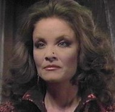
Ushas, and her Seal
Ushas (the Rani) was loomed within a few months of the Doctor. She might have some trouble breathing in moist environments. She will become a Patrexian and a genius in bio-chemistry, despite the fact that Gallifreyans have abandoned all forms of biological experimentation. The triple circles of the Rani’s seal represents the 3 arms of Mutters Galaxy (Sagittarius, Orion, and Perseus). She is not from a Newblood House and her fear of losing her identity because of a regeneration will lead to her keeping the same body for over 900 years.
 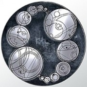
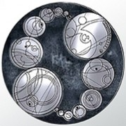
Koschei
and his Signet Seal
Koschei of the Newblood House of Oakdown (aka the Master, aka the Magistrate) is loomed. Koschei's full name is quite long and as lovely as a poem but Koschei is his chosen abbreviation. Koschei almost never sleeps and he never dreams. Koschei is a snappy dresser, enjoys a good book (even if its written by another species), and well respected by his House. The House of Oakdown is one of the most respected and noble Houses on Gallifrey. The Master's father (probably Castellan Marnal) had several estates on Mount Perdition. Many of the hillsides of this mountain were cover in red grass. Marnal could be considered the Doctor's step-uncle because his mother was Penelope's Mother.
A note on the name Koschei from Alexander Dante: The name Koschei comes from Russian folklore. Koschei the Undying was a wizard who looked like a decayed corpse. This implies that he reveals Koschei as his name during a visit to the Russian middle ages whilst wearing his Peter Pratt/Geoffrey Beevers body.
-0.5?? (the same clutch that produced the Doctor, but probably after the Doctor / maybe before the Master?)
The Voodoo Priest of the House of Lungbarrow (who will become Grandfather Paradox) is loomed. He might be the Doctor from the future who was taken over by the Paradox Virus.
~0.5? (~1151 years before the War)
Flaws begin appearing in Gallifrey’s perfectly static society. The House of Lungbarrow is one of the first houses to experience problems with its breeding systems. It has become infamous for its non-traditional offspring. At the time these flaws are noticed but viewed as unimportant, but later this clutch of loomlings becomes known as the Renegade Generation. The number of renegades in the Time Academy's class of 92 is greater then the total number of prior renegades in Gallifreyan history. Most of these students are from the Prydon Chapter. While the Time Lords keep the identities of their renegades and the number of renegades a secret from the general public, the four most famous renegades are Morbius, Grandfather Paradox, the Master and the Doctor. The chaotic actions of these renegades in the Spiral Politic makes it very difficult for the Matrix to make accurate predictions about the future.
-0.1 (day 128)
Intuitive Revolution Day.
0
(
day 159?
/ a few days before Otherstide)
Ulysses secretly arranges to have
the Doctor "loomed" into the House of Lungbarrow.
The Loom of Lungbarrow is exposed to the outdoors.
The Loom might be a force field tanks of memory filled liquid.
Spirals of microscopic data begin flowing into the Loom.
The Doctor's contact with the Loom of the House of Lungbarrow appears to have let some of the Other's biodata be reborn
as the Doctor. Possibly as a result of the Micen Island incident, the Chris Baker Doctor jumps looms and is
woven into the biodata of Penelope and Ulysses's child. Ulysses will arrange to have
the Doctor "loomed" into the House of Lungbarrow.
NOTE:
The 7th Doctor claims that he as been born from a Womb twice.
This probably refers to the the birth of the Other and the birth of the Doctor (via Ulysses and Penelope)
.
0 The Doctor has things in his biodata that no other Time Lord has (such as the biodata of the Other). His entire timestream becomes a constant string of temporal nexus points, so much so that many temporal powers won't risk killing him even when it would be convenient or logical. He is a living equation, a function of the Universe. The Doctor has always had a knack for telling when society was out of phase or when evil was present. This could be a Time Lord gift, but if it is its not one that other Time Lords acknowledge. The symbiotic nuclei he receives will wire him into the Vortex and (unknown to himself and most of the Time Lords) allow his subconscious to bend the timelines of others. On an unconscious level he affects everyone around him.
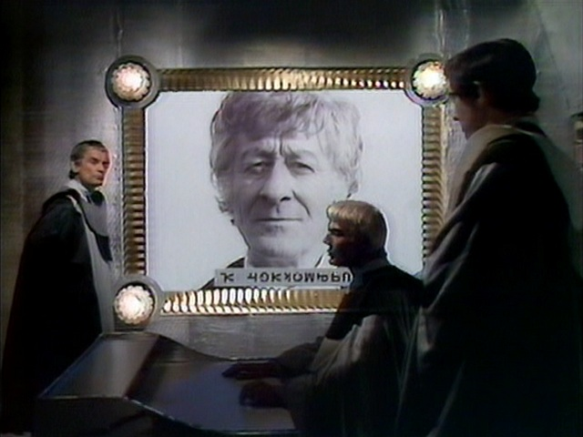
The CIA's File on the Doctor
0 ( day 160? )Quences takes the Doctor's genetic template to the Matricians who predict that he will be the most influential Time Lord since Rassilon. The CIA get a copy of this prediction and begin watching the Doctor. The CIA create Datefile DW74563-52Z to store all information about the Doctor. Quences makes a request to have the Doctor educated at the Academy with the option of becoming a Time Lord. This request is granted - probably because they believe that the Doctor is the Time Lord mentioned in the Prophecy that states that a Time Lord of this generation will be central to Gallifrey's confrontation with many new enemies. The one who will lead his people out of the time of darkness and unite them against the great evil that will face the universe. This Time Lord will find the lost Scrolls of Rassilon and lead Gallifrey from darkness. Only the President and the Supreme Council know of this prophecy and they never talk of it to others. The High Council does not know that the Doctor is the Other but the Chancellery Watch will learn of this and keep an eye on the Doctor because Rassilon left them special instructions to kill the Doctor if he undertook certain actions. If the High Council was to learn that the Doctor was the Other they might hunt him down and execute him.
0 The Order of the Silence will find it very difficult to get complete data on the first 236 years of the Doctor’s life. This is due to Gallifrey being timelocked.
 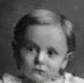
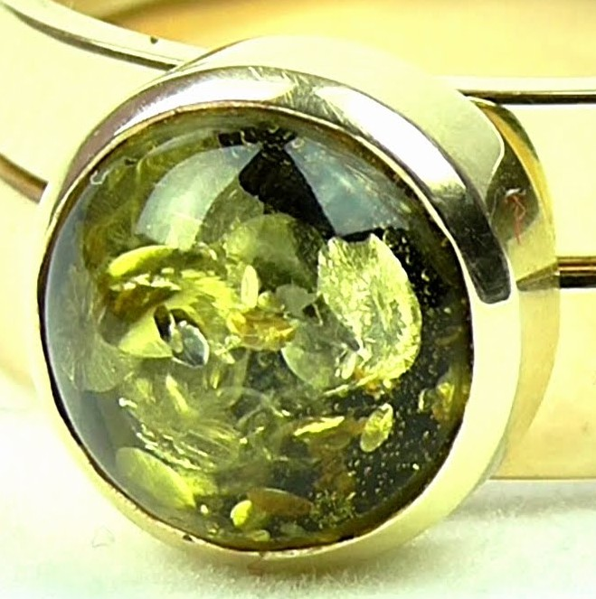
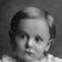
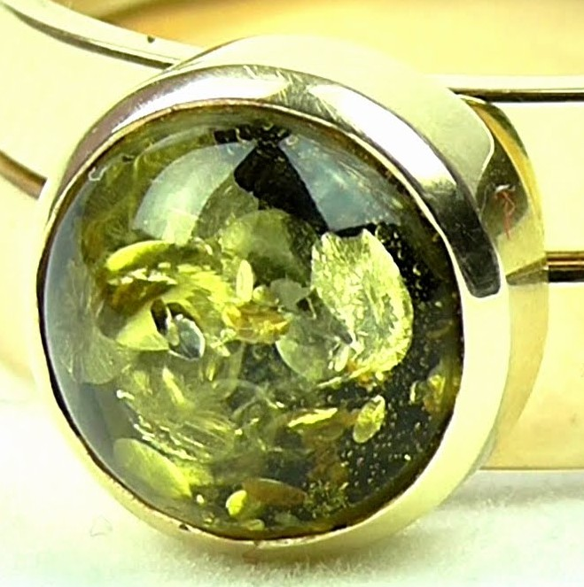
The Doctor's Crib, the Doctor as a child
e,
and the Doctor's Signet Seal
0
(Date Index 309456 / 1009 years before Lungbarrow / 4756.
44 Rassilon Era / 1213.
24
AD/GRT / 100447 TL / day 162 -
Otherstide)
The
Lungbarrovian who will be known as
the
Doctor is birthed via Loom of Lungbarrow
in
Gallifrey's star system.
This birth falls under the sign of the Crossed Computers which might be the sign of the maternity ward. In Earth
terms the Doctor believes that he is probably a Sagittarius.
This could refer to the fact that Gallifrey is located in the Constellation of Sagittarius from Earth's point of view.
The Doctor has vague memories of being all strung out in the Loom waiting to get out. He
is dragged dripping and screaming from the Loom. The Doctor might have been a child
(or possibly a childe)
at time of his looming. His first word might have been
"Again." He remembers seeing his cousins laughing at him because
he was the only Time Lord to have a belly button (it's an outie).
Satthralope smacked him so hard he could hardly walk. Because of the
belly-button his other cousins called him Snail and Wormhole. The
45 cousins of Lungbarrow
(including
Irving Braxiatel
)
witnessed the Snail's Looming.
Patience observes the Doctor's birth.
He also had a body temperature of 36 degrees
Celsius and
claims to have only one heart which beat 10 times a minute.
His eyes are blue and his Gallifreyan
blood type is TL Positive (which is very rare).
This child spends some time in a crib.
0 Snail (the Doctor) remembers his birth because the Other and the "Morbius Doctors" were conscious in him. The Other/Doctor loses access to memory of Patience and and his past as the Morbius Doctors. The memories of these former lives are protected by one of the Doctor's dreams; a female custodian named Verity. She guards the essential essence of the Doctor.
? (while very young)
The Doctor often dreams of stars.
Despite the fact that it is very rare for Time Lords to dream, the Doctor believes that dreams are whole reason for taking
time to sleep. The Doctor suspects that Dreams are all rehearsals for future realities.
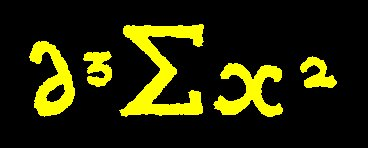
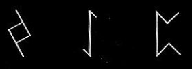
The Doctor's name in the Omegabet,
his CIA designation,
and possibly the name of the Other?
0
(day 162:
Otherstide)
Otherstide is the Doctor's Nameday. The
Gallifreyan God, Time, appeared in the garden on Snail's (the Doctor's) Nameday.
Snail (the Doctor) is given his name which is described as being as lovely as a poem.
When written in the modern Gallifreyan Omegabet the Doctor's name appears as δ³Σx²
.
The Doctor often gives the impression that his name is "Who" and signs his initials "Dr. W." His
signature
includes a '?' shape.
The literal translation of his name keeps changing, but by the time of The Shadows of Avalon it means "foolish wanderer".
The Doctor might add a new syllable to his name with each companion he travels with. If this is so, then he 'gives'
a 'part' of himself to each of his companions so that death won't 'find' him. By the time of SLEEPY it will have
38 syllables.
He claims that humans can't even pronounce the first syllable of his name (but this might not be true).
The Doctor finds it very hard to act rationally where family is concerned and
he
hides the name his family gave him in despair.
After becoming a renegade, he
considers his true name to be a very difficult question and
will believe that there was only one situation that would make him reveal it.
But by the time of "Girl in the Fireplace" he will have forgotten what his name was.
0 The Doctor has an uncle who "defied" the principle that all motion is relative. Marnal could be considered the Doctor's step-uncle. Though he claims not to, he had an aunt named Mabel. This might be the same aunt who was a good home-brewer. The Doctor has never had an older sister.
0 .26 ( Date Index 309456 / 4756.7 Rassilon Era / 1213 GRT / 100447 TL / shortly after the Doctor is born / Marnal is in his 12th body and has been operating the Type 40 for quite a while / before Infinity Doctors)A closed session of the High Council authorizes a reconnaissance mission to the Shoal at the edge of the Stellian Galaxy (30,000 light-years from Gallifrey) - which until recently was believed by the Time Lords to be uninhabited by life of any sort. The Time Lords fear that the Enemy from the Last Great Time War might be hiding there. Castellan Marnal bribes the duty officer at traffic control and leads a crazy crusade of three TARDISes to the Shoal. At this point Marnal is in his 12th body and has white hair and a large nose. Marnal fails because he attacks without knowing enough about the enemy. Marnal's attack on the Vore and destruction of the Temporal Cicatrix Scar alters history. This Cicatrix was form by a naked singularity 300 years before Marnal's attack. In the original version of History the Vore evolved to become an advanced sentient race. In the new version they swarm across the Stellian Galaxy as an aggressive non-sentient species. Ulysses, Penelope, Mr. Saaldamir , and Larna confront Marnal upon his return and threaten to reveal his atrocity. Marnal threatens to reveal the truth about Ulysses' son. Ulysses has Marnal's memory deleted, steals his Type 40 TARDIS (which will eventually become the Doctor's) and dumps Marnal in England in 1883 AD under the care of Penelope's mother. A Matrix Projection predicts that the Vore and the Time Lords will have a final battle in which 20-40% of the population of Gallifrey will die. The Time Lords conclude that the Vore might become the enemy that will destroy their species and mark the contact with this species as a possible Last Contact. The Supreme Council orders that all Time Lords are to maintain an exclusion zone of one parsec and 100 years from any Vore moon. The phrase "Marnal's Error" means to attack without understanding your enemy.
0.26 (when Marnal's crusade occurs)
At this point Type 40 TARDISes are still considered
to be the latest model of TT Capsule.
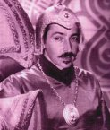
Braxiatel
?? (after the Doctor is loomed but before he attends the Academy)
The Time Lord, Irving Braxiatel
becomes estranged from House Lungbarrow to the point where they view the Doctor as the families best hope to
regain its name.
It is possible that Braxiatel joined another House.
He probably remains a Prydonian. If this House is a Newblood House then it might explain the fact that
Brax has the ability to control his appearance during regeneration.
It is also possible that he used the Elixir of Life to gain
control of his regenerations. Possibly his joining to another
House is what allowed the Doctor to be Loomed. If so
he hangs around long enough to witness the Doctor's looming.
The Doctor has a brother,
and Brax believes the Doctor as a brother.
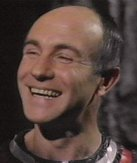
?? Drax is loomed. He will become a Prydonian. Drax house is Houses is very near the Capitol. He will be considered to be a lackluster student.
?? Millennia of the prestigious House of Brightshore is loomed. She will become a Prydonian.
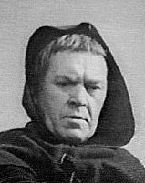
?? Mortimus (the Monk) is loomed. He will become a Prydonian. He wants to make the Universe a better place.
?? Jelpax is loomed. He will become a Prydonian.
0~ All of the Gallifreyans loomed around this time become known as the "Broken Generation" because so many of them are renegades.
?? (probably before attending the Prydon Academy)
The Doctor's Aunt Mabel tells him to“Look
up, look down, look around.”
? (when he is old enough to crawl)
The Doctor begins been looking in
the wrong places for things. He will continue this habit for the rest of his life.
? The Doctor remembers smashing some glass
which caused time to run wild and his teachers to yell at him.
?? (while still in the nursery)
The Doctor plays with Roentgen/Rontgen
(X-Ray radiation) Bricks, learning to shuffle the radiation about his body.
? (when the Doctor was a kid)
The Doctor hears fairy-tales of
the monstrous Toclafane.
The word Toclafane means bogeyman and is a general descriptor for numerous different mythical creatures.
? The Doctor's mother teaches him Gallifreyan nursery rhymes (including the Zagreus rhyme).
? The Doctors mother often tells him that he’s
“rather special”
? While at infant school the Doctor studies
quantum mechanics.
? (Doc is barely a Loomling)
The Doctor catches a young cobblemouse
on Mount Lung. He lets it loose in his House when his father, Mr. Saldaamir and his father's other friends are
discussing their plans.
The blue skinned Mr. Saldaamir is one of the only survivors of the Time Wars.
? The Doctor's Mother reads the Bible to him. Later in his life, the Doctor probably helped write a Bible verse that started with something like “In the Beginning…”
?? (while he is a small boy / before the Academy)
The Doctor is told the fable of Maximelos
and the three Ogrons. One Ogron was too vicious, another was too stupid, but the third had just the right balance.
The Doctor's mother reads the fairytale of Grandfather Paradox from a storybook right before bed. This very old legend about a youth who travels back in time and kills his own grandfather with a knife. According to the story this shadowy half living youth is named Grandfather Paradox and has only one arm. Supposedly he continues to exist somewhere in the cosmos to use and destroys Gallifreyans who violate the Laws of Time. The Doctor doesn't fall asleep that night.
? Snail (the Doctor) is told many Gallifreyan bedtime stories about how excessive time travel causes dementia and hallucinatory schizophrenia.
?? (when he is a child)
The Doctor's favorite bedtime stories are The Three Little Sontarans (a children's story that follows 3 Sontarans on a mission where they learn important life lessons) , The Emperor Dalek's New Clothes, and Snow White and the Seven Keys to Doomsday.
?? (for months or years after hearing about Grandfather Paradox)
The Doctor worries that Grandfather Paradox
is hiding in his House or stalking him.
?? For the rest of his life the Doctor will have occasional dreams where he’s back in the House of Lungbarrow but everything is different in a disturbing and frightening way. He assumes that all humanoids frequently have these dreams. The Doctor believes that dreams are whole reason for taking time to sleep and suspects that dreams are all rehearsals for future realities.
?? (before or during the Doctor's time at the Academy / probably before Delox becomes Chancellor)The Time Lord who will become President of "the Infinity Doctor's" Gallifrey, Academician Umbaste, becomes Chancellor.
? (when the Doctor was very young)
The Doctor leaves Gallifrey for the first time when his parents take him to their summer house on another planet on the other side of the Constellation of Kasterborous. There, his mother shows him the space ships flying overhead.
?? (when he was a boy)
The Doctor always wanted to drive trains.
He takes up trainspotting as a hobby. His first model train is a Hornby, Double-O. Being attacked
by a train in the Matrix vision in the Deadly Assassin
could also indicate that trains hold a special importance to him.
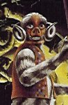

Badger and Innocet
?? (during his childhood)
Marnal is one of the Doctor's heroes (presumably because Ulysses and Penelope told the Doctor about him)
5.67 (Doc is 5 / about 9 months after Otherstide /
day 243~)
The Doctor carves his name on his desk.
Then he escapes from Badger's brainbuffing class and runs off. He is late for supper.
?? (when the Doctor was a child)
The Doctor’s
‘uncle’ locks him in a cupboard under the stairs for misbehaving.
? During brainbuffing, Snail (the Doctor) hoards five dimensional star charts. He reads Professor Thripsted's Flora and Fauna of the Universe (Abridged for younger readers).
? (when he was a boy)
The Doctor told that he can't be an explorer
because the Time Lords have already discovered everything.
? Snail's (the Doctor)'s experiments during later brainbuffing consisted of plant/animal hybrids, including accelerated genetic hybrids or orchids and axolotl.
?? Sometimes the Doctor and some of his cousins leave their House and go on Lushberrying trips in the woods during the summer. Everyone has fun on these trips. Housekeeper Satthralope withholds dinner from anyone she catches doing this.
?? The Doctor hears a flute while in the fields of tall grass on Mount Lung before haytime.
? (before his first day at the Prydon Academy
/
when he was a boy / Date Index 3-0-9-6-0-0)
The Doctor meets
Prydonian
Azmael
for the first time.
Azmael is
a
Hermit, who lived
half way up
the mountain behind the House of Lungbarrow
known as
Mount
Lung.
The
one-eyed
Hermit is a Time Lord with the title of Monk
of the
Eremite order (just like I.M. Foreman).
In addition to his other duties, he also served as an
ornamental hermit
for the House of Lungbarrow for half his life and spent most of that life sitting under a tree behind the house.
The river right next to the Hermit's home floods frequently.
The Doctor begins receiving extracurricular education from the old
Hermit.
The Hermit also teaches the Doctor about the beliefs of the religious class that I.M. Foreman belongs.
The Doctor learns how to look into his own mind and how to keep his mind calm and shielded.
The time the Doctor spent with the Hermit were some of the happiest hours of his life
and he would often disappear for several days to spend time with the him.
Azmael is the Doctor's teacher, but
they become good friends
and work well together.
The
Doctor will come to see Azmael as one of his few confidants.
They might have eventually become more then friends.
The Hermit is the
Doctor's
most important teacher and guru.
Azmael is the finest teacher he ever had.
NOTE:
The descriptions the Doctor gives for the Hermit and Azmael are so similar that it is likely that the Hermit
(the Doctor's teacher and guru)
and Azmael
(the finest teacher the Doctor ever had
)
are the same person.
? 'Serendipity' is the Doctor’s favorite word and 'Fortuitous' is his second-favorite. The Doctor's favorite key is E flat. He loves truffles, and his favorite pasta is spaghetti. He reads New Scientist frequently. He loves getting his hair cut. The Doctor's lucky number is 74,384,338 (or 7 depending on when you ask him). The Doctor hates heights, crowds of unwashed people (especially bus stations), unrequited love, tyranny, cruelty, Blake’s 7, and Marmite. He thinks hope is a good thing. The Doctor always have difficulty talking to someone who has no visual form (is that why he almost never uses phones?) His first incarnation has no interest in small talk and hates gossip.
7 (the year before the Doctor)
Based on her interests and talents,
the new blood Gallifreyan Ruath (aka Ruadvorophrenaltid)
enters the Prydon Academy. She is know for being a wild trouble maker and her class is obsessed with studying Gallifrey's
history.
8? (before the Hermit begins teaching the Master and
the Doctor together)
Azmael becomes Co-ordinator of the Matrix and works
to record the predictions about future events.
The Hermit
Azmael begins living in a cave on the peak of Mount
Cadon.
?
The Doctor's father
takes him outside they
watch the shooting stars above Gallifrey one night.
He holds him up to see the stars.
? The Doctor and his father witness an amazing Gallifreyan dawn.
8 (When the Doctor is 8 years old / not too long after the Magistrate is loomed / while at the Prydon Academy)Based on their interests and talents, the Doctor, Koschei (the Master) of the newblood House of Oakdown , Torvic, Magnus (the War Chief) , Drax, Mortimus , Jelpax, and Millennia are all enrolled in the Prydon University on Mount Cadon. Lady Zurvana might have been the Doctor's mentor. Cardinal Brabbajaggl probably taught History. He also has a cybernetics tutor. The Doctor's room in the Academy dormitory is on the sixth floor. The Doctor’s caretakers are a man and a woman. They do their best to make him welcome in the house with the other boys. They wear 20th century looking lace up shoes.
Moving to the Time Academy at age 8 might explain why the Doctor doesn't know much about Southern Gallifrey.
? (
probably the day he meets the Master - which would make it his first day at the Academy /
after the Doctor moves to the Academy at Mount Cadon)
On his first day, the Doctor skips his Temporal Protocol Class
at Prydon Academy and goes to visit the Hermit on Mt Cadon at an earlier then his usual time. He catches another
boy there who he doesn't know. The Hermit is teaching the boy about Vampires and the Sphinx. This boy is
implied to be the Master. The Doctor believed that he was the Hermit’s only pupil and is enraged at this
betrayal. The Doctor believes that he is better then any other student, and thus the only one who deserves the
Hermit’s attention. The Hermit explains that he teaches all of the young renegades and that the Doctor
needs to realize that the Universe doesn't owe him anything. This revelation is one of the most traumatic points
in the Doctor’s early life. The Doctor, Koschei
(the Master) and Magnus (the War Chief)
become good friends
on their first day at the Academy.
The Doctor believes that
he and Koschei (the Master) are exactly the same. They become friends and colleagues.
??
(when the Doctor and the Master were young / before they grew up)
The Doctor and the Master
often sneaked away from classes to go running in fields of red grass on Mount Perdition. While doing this
they often called up to the sky.
They also explored several forests. They would sit by the river
Lethe and stare at the stars. They made plans to be free of
Gallifrey society and wander throughout the universe.
? (while the Doctor is a student)
Torvic was a student who would torment and bully the Doctor and Koschei (the Master). Usually one of them would
stand paralyzed with fear while the other was being tormented.
?
(when he was a boy)
The Doctor
cries all the time, but his caretakers don't know why. The male
caretaker warns him that if he joins the army there will be no running
away and no crying. The female caretaker believes that the Doctor
doesn’t want to join the army. The male also believes that the
Doctor won’t be allowed to stay at the Academy and will never become a
Time Lord. The Doctor wanted to run away and join the Circus.
? (while the Doctor is at the Prydon Academy)
The Doctor thinks the Prydon Academy is awful.
? (while the Doctor is a student / after he meets the Master)
Torvic finds the Doctor and Koschei (the Master) playing by the river Lethe and shoves Koschei's head under the water. The Doctor is filled with fury and anger at this constant bullying. He took a rock and crushed Torvic's skull killing him. Koschei realized that if they were caught they would never become Time Lords and escape Gallifrey. Together they burned Torvic's body and never told anyone. The Watch never discovered what they did and they never spoke of this event again.
? (during a stressful time at the Academy)
At the request of the Hermit the Doctor fasts for 3 days and 3 nights, making supplications to Gallifreyan gods. His activities are discovered by his teachers at the Academy but he is not punished.
?? The Doctor is kicked in the head by a Baanjxx (which was high on Cerub Nuts). Some Gallifreyans blame the Doctor's renegade behavior on this incident.
? (the night that Torvic died / almost certainly during the Doctor's
3 days of fasting)
The guilt from killing Torvic should have
led the Doctor to become Death's Champion, but other beings had plans for the Doctor. Time Lords in nightmares
or near-death states sometimes make deals with the Gallifreyan gods. The Doctor makes such a deal with Death during
a nightmare. Death offered the Doctor the chance to be free of the guilt and hatred from killing Torvic but in
return he had to allow
the Master to suffer from killing in self defense to become Death's Champion.
The Doctor tells Death to take the Master instead of himself. and
it is this killing that starts the Master on his path to evil.
The Doctor will eventually forget that it was him and not the Master who killed Torvic.
? (he claims to have always believed this)
The Doctor believes that Evil is an actual force. He is well know for this black and white belief, which
other Gallifreyans consider to be archaic and
incomprehensible
.
The Doctor saw good and evil as a processes. One could not 'be good,' one can only only 'do good.' The Doctor
doesn’t like perfection as it leaves nothing to drive progress. He believes perfection dulls the mind
and the spirit.
Throughout his life the Doctor will prefer pain to numbness.
When the Doctor reacts instinctively he tends to take the moral or ethical path. But when he thinks about his
actions he sometimes chooses to be less ethical (though this varies from incarnation to incarnation).
The Untempered Schism
8~ (when the Master is an 8 year old Novice / Almost certainly right after the death of Torvic / on the eve of Cold Lamentation)
As part of his initiation ritual Koschei is taken to the Untempered Schism and stares into eternity. Death takes him as her Champion. The Masters mind is filled with the sound of drums. This sound has been sent from the edge of the Time War by Rassilon to create a link that will allow Gallifrey to escape from the War. The Master will hear this drum beat in his mind whenever he is awake for the rest of his lives. If Death had not begun to influence the Master then he would have become as good and noble and heroic as the Doctor, however through the drum beat Death makes sure that t he drums' call to war begins to consume Koschei's soul. Every incarnation of the Master is unknowingly influenced, on a subconscious level by this dark psychic pressure. This dark influence creates a self-reinforcing gestalt composed of all the hundreds of incarnations of the Master scattered through space and time. The motivations and decisions made by each incarnation of the Master are, unknowingly, controlled by this emergent entity. The Master sees everything as impermanent. Everything dies and everything ends. And he sees great beauty in the ephemeral nature of the universe. The Time Lords of this era will come to believe that the drums are merely a symptom of his insanity, but the Master believes the drumming is the Vortex calling him to War. The Master is unaware of the effect of this unconscious manipulation until the events of Harvest of Time, and doesn't learn the source of the drums until End of Time. If freed for even a few minutes from this subconscious pressure, most incarnations of the Master quickly revert to a kind hearted and even heroic nature. This is probably what happens to the Yana and Smith Masters.
NOTE: The drum beat is based on the opening of the Doctor Who theme song. The Master looks into the vortex and sees and hears the opening of Doctor Who. Essentially the Master spends his whole life listening to a variation of the Doctor Who theme. Symbolically its very cool. Its likely that the Doctor would have been the one receive the drums if not for his deal with Death.
?? (when he is physically a small boy)
The Doctor leaves so that the other boys won’t hear him crying. He takes three books with him and hides in a barn that is a great distance from the house. While trying to get the TARDIS to trace her own biodata, Clara accidentally arrives back in the Doctor’s childhood. She ends up hiding under the Doctor’s bed and grabbing his leg when he wakes up. This scares him badly, but Clara tell him that this is just a dream and calms him down. She tells him that fear can make him smarter, faster, and more kind. She also tells him that it okay to be afraid of things that don’t exist, and that fear makes companions of everyone and that fear will bring him home. She leaves him with a toy soldier who has no gun.
8 (when he was and 8 year old Novice)
As part of his initiation ritual the Doctor
is taken to the Untempered Schism and stares into eternity. He sees forests rising up, absorbing sunlight from a billion summers, and falling into the ground and hardening into diamonds. The Doctor runs away from what he sees and he later comments that he basically spent the rest of his life running away.
Others claim that the Doctor will spend his whole life running away from his true identity.
The Doctor is now known
as a
Time Tot
(aka Time Toddlers)
and
is given the rank of Novice.
The same Time Lords who observed the Master staring into the Schism observed the Doctor.
8? (probably when they view the Untempered Schism)
The Master believes that you should always stand-up
for yourself and never run. He believes the Doctor always runs.
8 Ushas (The Rani) stares into the Untempered Schism and her morality and sense of humor are broken, leaving her cruel and unemphatic. Nobody realizes this at the time.
? (during the 3 days of making supplications to the Gallifreyan Gods)The Doctor is inspired to write a collection of poetry in verse form which he takes to the Hermit on Mount Cadon. Much of what he writes concerns events that happened before he was loomed.
? As a young boy the Doctor's childhood is very lonely. This lonelyness will get worse after the Time War.
8? (while he is a time tot)
The Doctor reads Arabian Nights
8 (during his first year at the Academy)
The Doctor has a pet Flubble which he keeps hidden under his bed. The Flubble is almost discovered when the creature goes into heat and begins singing its mating song.
?? Despite his fear of the Untempered Schism, the Doctor builds space-time portals for his own entertainment. He will spend large amounts of his childhood looking at the Space-Time Vortex.
?? (before Time Monster)
The Doctor learns Vortex Walking from
a Space Time Mystic who will later live in the Quant
ocks.
This could refer to the Hermit who would live near that area of England in Planet of the Spiders.
The Master teaches the Doctor how to temporarily alter his genetic makeup enough to fool gene scanners. Other activities the Doctor and his friends participate in include playing hide and seek in the Communications Tower and riding Vortisaurs.
? (while at the Prydon Academy)
The Doctor and his friends build Time Flow Analogues (Time Jammers) to mess up each other's time experiments. These use non-technological Lammersteen engineering. The Master often targets the Doctor's experiments.
? (when the Doctor is young)
Karlax was a playmate of the Doctor’s.
?
(very early in the Doctor's life)
The Hermit
tells the Doctor
and Koschei (the Master)
ghost stories about the Great Vampires, the Fendahl,
and the Legions of the Sphinx.
He also tells them of Omega, and Salyavin. Salyavin
and Omega
becomes the Doctor's heroes, but the Vampire stories are his favorites. The Doctor also learns of legends
of ships in warp ellipses that traveled throughout infinity.
The Doctor prefers his legends to be filled with mystery as opposed to hard data. The Doctor hears old horror stories
of Gallifreyans forced into runaway regeneration chains in alien environments. They would be turned into horrid
monsters, which would be killed, walled up in their own TARDISes or hidden away by their cousins. In the Doctor's
day, the Hospitallers would care for such cases.
The myths of the Fendahl terrify him.
The Doctor is one of the few children on Gallifrey to have nightmares
and
for this reason he
dislikes Gallifreyan legends, considering them mostly rubbish.
? (when the Doctor was a little boy)
The Doctor hears legends of the Pantheon of Discord.
10 The Doctor is caught skinny-dipping with one of his cousins
(probably Innocet).
Just for fun the Koschei captures a queen scissor bug and lets an entire swarm of them die looking for the queen.
?? (while at the Academy)
One of the lecturers of the Doctor, is always using the phrase "No time like the present."
12 (Before the end of the Time War / Before the 4th Doctor version of Shada / when the Doctor was 12?)
The Corsair becomes a friend of the Doctor’s. The Corsair was a Prydonian who explored the limits of time and space in a TARDIS that was usually desguised as a pirate ship. Much like the Doctor later would, the Corsair probably worked for the Time Lords as an unofficial agent of the CIA. The Corsair wore an ouroboros tattoo on all of his incarnations and was known for his roguish smile. While usually male, the Corsair occasionally performed a sex-change regenerations to spend an incarnation as a female. Her female incarnations tended to exhibit a lot of deviant behavior, and he was know for rescuing handsome or beautiful humanoids from dangerous situations. Most of the Time Lords disapprove of the Corsair, but the Doctor might have asked the Corsair if he could travel with him as his assistant. The Corsair refused with a laughed. The Corsair never traveled with a companion but always had a cat, and often a parrot.
? (while at that Academy)
The Doctor becomes friends with Ruath and she distracts him from his studies in many ways. This starts him on his career as a non-conformist. The Doctor will become known as being incorrigibly proactive.
13~ (when he was a teenager)
The Doctor begins misbehaving frequently. He will later describe himself as a terror. This misbehavior will last until he his 120 years old.
? (while at the Academy / before being disinherited)
T
he Doctor continues his experiments with plant/animal hybrids. These include research on Water-Sligs.
The Doctor uses sheets of paper to make Gallifreyan Interceptors, which he uses to annoy his teacher.
13 (996 years before Lungbarrow)
Hofwinter becomes
Surveillance Actuary in the Space/Time Accession Bureau. At this point President Mazwen the Last is in office.
No more then 8 Babels have been grown at the point. Most of them are insane. One escapes and kills the inhabitants of the House of Catherion. It is eventually captured by members of the Order of the Weal and imprisoned at the House of Ixion until destroyed. The remaining Babels are starved of energy for the next several centuries. Officially the Catherion Loom is destroyed and the project is canceled after this incident. However rumors will later claim that several more Babels were created at the House of Catherion.
? (while the Doc is at the Academy)
Lord Cardinal Lenadi is head
(Cardinal Prime?)
of the Prydon Chapter.
? Cardinal Brabbejaggl taught the Doctor that magic doesn’t
exist.
? (while at the Academy)
The Doctor studies Recreational Mathematics.
He comes first in his class in logarithms.
? (while at the Academy)
The Doctor studies Rassilon's Guide to
the Multiverse: Volume 3.
?? The Doctor has dreams about standing at a lectern lecturing in a class and discovering that he is naked. Because it is very rare for Time Lords to dream, he assumes that he is the only one who has these dreams. The Doctor believes that dreams are whole reason for taking time to sleep and suspects that dreams are all rehearsals for future realities.
?? Unlike most Gallifreyans the Doctor does learn how to read Old High Gallifreyan.
?? The Doctor proposes using Telepathic Circuits to create a Voice Integrator. Such a device would be able to translate all vocal languages.
? The Doctor becomes a member of the Prydonian Chapter Debating Forum.
?? (before being disinherited)
The Doctor deliberately fails the Prydon
Chapter Certificates in Officiating and Legislating. This could prevent him from ever becoming a Time Lord.
19? (he's a few semesters ahead of the Doctor)
Vansell (Vansellostophossius) is recruited by
the CIA before going to the Academy. The CIA has him watch
d
3sigma x
2
(aka the Doctor)
.
?? (several years after the Doc's proposal / before
the Doctor Graduates / probably a long time before he completes his Languages classes)
A Time Lord named Therde
invents a functioning Voice Integrator which can translate any language.
All TARDISes are given translation circuits.
?? (Before the "Divided Loyalties" flashback /
while attending the Prydonian Academy)
The Doctor is given the nickname: "Theta Sigma"
based on a form of Time Lord coding
that identifies him uniquely and relates to the location his mind will occupy in the Matrix.
The Doctor doesn’t believe that the Matrix is alive, and sees the stored minds as mere echoes.
It is possible that (like Omega) these are the letter grades he received for some research paper The name is
probably bestowed upon him when he takes his Prydonian Vows.
Theta Sigma
doesn't like this nickname.
Despite this the Doctor will continue to be known as Theta Sigma in official Time Lord paper work.
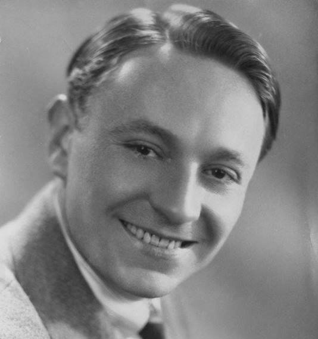
The "first" Doctor (William Hartnell) and Doctor's signature over the Prydonian Seal
20 (12 years after being enrolled in the Prydon Academy)
The Doctor takes his Prydonian Oath and graduates from the Prydon
University (Academy).
Borusa
Borusa attended the Patrexes Academy, but, upon graduation, became a Prydonian. As is traditional, he continues to wear Patrexes colors. One of Borusa’s incarnations was a middle aged woman - indicating he committed suicide. He eventually was promoted to the rank of Cardinal. He teaches telepathy and law at the Time Academy. Borusa is obsessed with academic studies and doesn't care for politics. This will change after the Doctor graduates.

The Seal of the Time Lords ' Time Academy?
20? The Doctor is enrolled in the Time Academy. Quences wants the Doctor to be a Cardinal and redeem the family name, but the Doctor doesn't even want to become a Time Lord; he just wants to get his doctorate. The Doctor will have several teachers while there, including: Prydonian Cardinal Borusa (who teaches telepathy and Law), Cardinal Sendok (who teaches stellar cartography and cosmic science), Cardinal Zass, Arcalian Genniploritreludar (teaches stellar engineering) and Franilla. Students in the Doctor's class (the Class of '92 or the Class of the 4th Millennium) are: Koschei of the Newblood House of Oakdown (the Master , probably the Magistrate) , Drax, Rallonwashatellaraw of the House of Stillhaven (Rallon), Mortimus, Ruathadvorophrenaltid (Ruath), Magnus (the War Chief) , Ushas (the Rani) , Jelpax, Vansell, and Millennia. Koschei specializes in Cosmic Science. Rallon, Vansell, and Ushas probably started at the Academy a few semesters ahead of the rest of the Deca. Other students attending the Academy at this time are: Anzor, Cheevah, ebediatroculozan (probably of House Dellatrovellas), Galah, and Runcible (the Fatuous). One of the CIA Tribunal (Gothaparduskerialldrapolatkh, Socra or Adelphi) attended the Academy with the Doctor. The Doctor never gets to know Tebediatroculozan very well.
?? Space travel is considered a game for children on Gallifrey.
20? (shortly before attending Borusa's class)The Doctor attends a party on the Moon of Korpal and meets Rummas for the first time. Unfortunately the Doctor is too drunk to remember the meeting.
20?
(before the Divided Loyalty flashbacks / when the Doc is in school and about
350)
The Doctor meets Vansell at the Time Academy.

The Doctor's Type 40 and the Master's Type 45 TARDIS
?? (while the Doctor and Master are at the Academy / the Ships first day at the TARDIS Academy )On her first day at the "TARDIS Academy" the Type 40 (Mark I) Time Ship (that used to belong to Castellan Marnal) picks the Doctor to be her future pilot. A Type 45 (Mark II) TARDIS, named Lolita, picks Koschei (the Master) as her future pilot. Lolita viewed the Doctor as a lunatic. It was at this point that Mother (probably the Matrix) gave up on the Type 40 Ship ever seeing things her way.
20? (during his first year at the Academy)
The Doctor and his friends put their teacher in a timeloop so that he teaches the same lesson for an entire day. This gives him a bad reputation for the rest of his time at the Academy.
21?
(shortly after meeting Rummas for the first time / probably in his 2nd year at the Academy)
Prydonian Cardinal Borusa
becomes the
Doctor
and Rummas' tutor.
??
(before The Sensorites)
Borusa teaches the Doctor telepathy.
The Doctor learns enough about telepathy (probably from Borusa) that he can sometimes read human minds. The Doctor
claims that artron energy is silly
and believes
his instructor was the only one who truly understood artron energy.
The Doctor lacks discipline and focus and
only scores a 42% in Telepathy. Despite this, he achieves a grand master standing in telepathic combat (probably
from mindbending matches)
?? The Master has highly developed powers of Extra Sensory Perception. The Master (and presumably all Gallifreyans) learn Gallifreyan telegnostic disciplines for clearing the mind.
? (while at the Academy)
Koschei (the Master) hypnotizes people for fun
and teaches the Doctor how to hypnotize people.
Koschei is known as something of a bully and nick-named 'the Master' by many of the other students.
? The Hermit and the Doctor go on a mountaineering hike. They have to cross a flooded river and the Doctor must leave all of his survival equipment behind. He is afraid, but he does it. On the other side he finds the Hermits garden and residence.
?? (before Terror of the Zygons)
A "Tibetan Monk" teaches the Doctor how
to put other people into a trance that vastly lowers need for oxygen. If they are woken incorrectly the spell
can be fatal.
The idea of the Time Lords using subterfuge and assassination is unthinkable at this point. (But the existence of the Lord Burner, the President's personal Assassin is not know by the populace).
?? (while on Gallifrey)
The Doctor
does learn how to draw, but has an intense
dislike for Gallifrey’s computer drawn paintings,
especially the
paintings of Gallifreyan Subjunctivists. To the dismay of his Art Teacher he has talent with making sculptures
and it upset his art teacher greatly.
Despite being commended for Landscape Gardening,
he only scores an 11% in Art and Architecture.
?? (probably before Aldridge was exiled from Gallifrey
/ after titles became popular)
The Time Lord known as the Interior Designer
suggests that the Time Lords be known as the Temperors (a combination of Emperors and Temporal). The idea is
regarded as ridiculous and the Interior Designer gains the nickname Bad Temporer for the rest of his life.
?? (probably at the Time Academy, as Galah becomes a Time Lady
and she might be Patrexes)
The Doctor meets Galah at the Academy, but
they remain acquaintances. She will become a sculptor after she graduates.
41?~
(20 years before Savar's mission)
A friend of Savar's dies in a boat during
a storm.
?? (When he was a boy)
The Doctor
spent a lot of time staring at the sea. At that point he believed
the souls of the dead ended up in the sea and that you could hear them
whispering.
?? (while at the Academy)
The Doctor earns his Gallifrey Lifesaver's Certificate
(which involves learning to swim).
45 (when he's 45 years old)
The Doctor leaves primary school.
The Doctor stops believing in fate or destiny.
50? (this period lasts for 50 years)
The Doctor finally overcomes his acne problem.
?? (while at the Academy)
Drax and the Doctor spend a lot of time messing around with silly chemical experiments.
? (When the Doctor was a boy / probably before Divided Loyalties)
The Doctor writes a treatise on the chromosomal origins of romantic love that proves that every part of the experience is explained and predicted by chemicals and genetics. His tutor tells him he missed the point and gives him a bad grade. From this point on love has no mystery or interest for the Doctor and and takes a dim view of romantic relationships. He will never think of himself as a family man. While he has tried intercourse, he lives an essentially celibate life. Eventually many time aware worlds will know the Doctor would never kiss a girl. This is not an rare stance for most Time Lords.
? (while at that Academy)
The Doctor, and occasionally Koschei (the Master), spend time with Shobogans in Low Town. They get drunk on Best Old Shobogan at the Golden Grockle. On one of these occasions Koschei picks a fight with six drunken Shobogans. While Koschei (the Master) usually manages to avoid blame or punishment for his misdemeanors, e veryone at the Academy thinks the Doctor is reckless.
??
(the Perigosto Stick game is
possibly
taught right after
acquiring
the
symbiotic nuclei
/
probably before the Doctor turns 90 / probably after he startes attending Borusa's classes)
The Doctor and Ruath
electrify Borusa's Perigosto stick.
Most
Perigosto Sticks are thin silver or
platinum
probe with a tiny sphere 4 dimensional sphere (or cube) on top.
The Perigosto Stick Game is played by keeping the sphere or cube in motion, without letting it fall back into normal
space.
?? (while at the Academy)
Despite their friendship the Doctor dislikes
Koschei's untrustworthiness.
The Doctor argues with the Master for not keeping his word. The Master scoffs that such honesty is unrealistic.
?? Borusa trains the Doctor in Gallifreyan Law. He does very well in Borusa's class, scoring a 66% in Law. Despite claiming that Gallifreyan law is only worth teaching to time tots, he is still instilled with a deep ideal of service to the Worshipful and Ancient Law of Gallifrey. Borusa believes that one can only find truth in mathematics. The Doctor will later be very surprised to learn that Borusa respected him and expected him to do well.
60~ (at around 60 years old)The Doctor probably begins learning about tri-bio-physics.
60~
(900 year before Time's Crucible)
The Doctor gets his first 'job'.
?? (within 10,000 years of the Morbius Crisis)
The Arcalian Benncuiq IV documents the events of the Minyos incident
in
Our Darkest Hour?
?? The Doctor loves History classes. But he fails to grasp the official version of the history of the Dark Times. He also questions the predestination truth that states that interference in the events of the cosmos is a waste of time. In the end he only scores a 49% in History Cardinal Brabbajaggl probably taught the Doctor History. The Doctor's instructor tells him that it is dangerous to ignore history.
?? (when the Doctor was a young man)
The Doctor reads about how all life on
Gallifrey was nearly destroyed by the Spore over 1000 years before he was born.
??
(probably when the Doctor was young and living on Gallifrey)
The historian Hedin becomes a friend of
the Doctor's
and might have shared in several of his adventures.
Hedin is a traditionalist who prefers the old ways.
Secretly, Hedin was a member of the Adherents of Ohm and worshiped Omega.
Hedin has a son (also named Hedin) who is a historian.
?? (while the Doctor is still on Gallifrey)
Most of the Time Lords the Doctor knows
idolize Omega.
?? (while the Doctor is a student)
The Doctor loses a game chess to an Arcalian named Savar. This is the first time he's ever lost at chess.
Savar, a contemporary of the Doctor, and a friend of the Doctor's Father, begins working on a plan to rescue Omega.
?? "They" (presumably his teachers) tell then Doctor that he has a sophisticated prose style.
?? The Doctor dislikes studying for school. Much to the dismay of his Cousins the Doctor scored a low double gamma in Time Lord Philosophy, and does poorly in Physical Inactivity (70%), Temporal Mechanics, Infinite-Regression Mathematics (84%), Quantum Physics, 4-Dimensional Tachyon Studies, and History. He has only vague knowledge on the creation of TARDISes. The Doctor fails Basic Chronic Navigation, and Practical Theology. He had to take his Temporal Theory exam three times, and flunked Discontinuity Physics three times before barely passing. For what it's worth he believes he's no good at solving the 4th Dimension, HTML markup, microwave technology, and dentistry. The Doctor is awarded a certificate of Dimensional Engineering , but scrapes through most of the other classes. The Doctor's parents are quite disappointed in his low scores. The thing most of teachers will remember about the Doctor is that he is always late (an almost inconceivable event in Time Lord culture). By human standards, the Doctor is an expert in electronics, mathematics, astrophysics, robotics, general chemistry, and Macro-Cosmology.
61?~
(10 years before being rescued
/ ~1251 AD??)
With the support of Lady Zurvana, the Time
Lord Chancellor
(probably Umbast) who is to become The President, the historian Hedin (son of Hedin), and,
Ulysses,
(the Doctor's father) Savar's plan is put into action. Saver enters a black hole, faces Omega, and flees.
The event drives him mad.
Savar is trapped in his TARDIS's escape unit. He is found by the I. The I strip his escaped unit, steal a
Mark IV Mind Probe, and take Savar's eyes.
?? (when the Doctor is a lad)
The Doctor meets the
elderly archivist Chronotis (aka Salyavin)
who works in the Panopticon Archives. They become friends.
Salyavin might have had a hand in wiping the memories of the Doctor's parents from the House of Lungbarrow and the
other Gallifreyans.
?? Ulysses receives a tattoo on his arm (possibly a Time Lord criminal biodata marker). He later removes it leaving a scar.
61
??
(After the Doctor loses to chess with Savar
/ after the Doctor begins to do poorly in most of his classes)
Ulysses has the Doctor's grandfather
(probably Quences) look after the Doctor. Ulysses returns to Earth to enlist in Operation Black Cross
(a Hitler assassination team). He now goes by the name John Smith and appears to be 25 years old in human terms
at this time. The Operation is a failure because the Master betrayed Smith to the Germans, and Smith was captured
by the Germans and held in Dachau. Ulysses's TARDIS leaves London (March 6, 1944) and returns to Gallifrey without
Smith.
Without a TARDIS John Smith (Ulysses) isn't technically a Time Lord.
For violating the First Law of Time all mention of the Doctor is erased from Gallifreyan History.
?? The House of Lungbarrow might have banned all mention of the Doctor and his father's name because they consorted with aliens.
?
(
While quite young /
well before the Divided Loyalties flashback / probably decades before The Alchemists / before leaving Gallifrey to experience
the cosmos)
The Doctor becomes obsessed with Sol III
(The Earth).
The Doctor access records about Earth History.
He likes the 20th century and one of his favorite years is 1911 AD.
He realizes that the personalities of some humans are even more eccentric then he is. He see's the Earth
as a source of challenges and rewarding experiences.
The Doctor tries, and fails, to convince the Time Lords to prevent Agonal's interference with Human history.
?? (while the Corsair is in a male incarnation)
On one of his many visits to Earth, the
Corsair pretended to be an Assyrian God for about a week, then he stole their sacred cat.
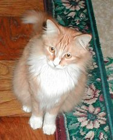
A cat
The Doctor and Ruath re-introduce cats into Gallifrey's eco-system, alter gravity fields in the Academy, and break into TARDISs.
?? ( before The Sontaran Experiment )
Greymalkin might have been the name of a cat the Doctor knew or owned.
70? (50 years after the Doctor started attending the Time Academy)
The Doctor feeds Valyestriantrilumar's (aka Valyes) school project to his snapping wart fowl. Valyes won't forgive him for this.
70~?
(no more then 200 years Before Divided Loyalties)
The Patrexian Drall takes over
as the
402nd President of Gallifrey. Rannex is Castellan.
?? (after Savar's Omega mission)
The Patrexian Delox becomes Chancellor.
He also teaches philosophy at the Academies.
70~?
(When the Doctor is a 'boy' /
Romana got her first skimmer at age 70)
The Doctor enjoys flying skimmers.
? (before Divided Loyalties)
Drax builds himself a Skimmer.
? (before the Doc was cast out of Lungbarrow)
The Patrexian, Gandarotethetledrax was loomed.
His “father” is very anti-CIA and is a friend of the Doctor.
(almost certainly Drax.)
Gandarotethetledrax’s father often visited the Doctor at his home in the House of Lungbarrow.
?? The Doctor plays the Gallifreyan Labyrinth Game which (at this point) can be found on every street corner and in the Panopticon.
71?~
(1000 years before TID
/ hundreds of years before Seeing Eye
/ ~1297 AD??)
After 10 years of drifting Savar is rescued.
Vrayto becomes a maidservant for the Time Lords.
75??
(probably less then 80 years after
the Doctor's Birth assuming a normal human lifespan)
Penelope is lost. The Doctor seems
to believe she died
on Earth in the 1940s. However his mother is alive and
this woman will be living on Gallifrey at the end of the Last Great Time War.
75??
(1946 AD)
John Smith (Ulysses) is freed from the German
prison camp in Dachau but is still stranded on Earth.
? (before Divided Loyalties)
Vansell, Ushas, and Rallon achieve the
rank of Junior Time Lords
? (possibly over 60 years after he started attending
the Time Academy)
The Doctor begins to grasp the basics of temporal
theory.
90?? John Smith (Ulysses) acquires a Doctorate and publishes lots of scientific papers at Princeton, Chicago, Brown University, Duke, and UC Berkeley.
90 (When he’s 90 years old / when he’s just
a kid)
The Doctor visits the Medusa Cascade –
the center of a rift in time and space.
92?
(early 90s /
after acquiring a Symbiotic Nuclei?)
Theta Sigma (the Doctor) finally publicly
admits he still likes playing with his perigosto stick.
? Anzor dominates the lives of all the students. He is a school bully, the spoiled son of a Councilor. He enjoys inflicting pain with the galvanizer he carries. He forces Theta Sigma (the Doctor) to do his navigational homework and teases him about his perigosto stick which is made of rotten fruit instead of pure platinum.
94 (near Otherstide)
Ushas (the Rani) sends Theta Sigma (the
Doctor) a raucous invitation to her 94th Nameday.
?? Prefector Zorac dubs Vansell Nosebung or Toast Rack.
100~ The Doctor describes himself as being a lad.
100?? John Smith (Ulysses) meets Anne Baker. She was born about 1940 AD. She is a Professor at Berkeley and is nicknamed Q-Star by John Smith.
100?? (1970 AD)
John Smith (Ulysses) publishes his last
paper from Berkeley.
100?? ~ John Smith (Ulysses) marries Anne Baker, and they live in Sausalito. John Smith begins writing The Traveler sci-fi novel series.
100??
~
(1970~ AD)
John Smith (Ulysses) and Anne Baker have
a daughter,
who is half human on her mother's side. They might also have had a son who becomes a dangerous renegade.
110 ~ (over a 1000 years before The Shadows of Avalon)
Cavis and Gandar decide that the Doctor
would make a worthy opponent.
112??
(1982 AD)
John Smith (Ulysses)
was known as a radical
and had the nickname Doctor Doom. Anne Baker serves as his research assistant when
he builds an A-bomb. The panic caused by this gets John Smith fired.
The Doctor's grandfather discovers that John Smith is stranded on Earth near San Francisco.
115? (900 years before the Time Lords begin mobilizing)
At this point the idea of using a weapon
that could destroy an entire culture is unthinkable by the Time Lords.
?? Anne Baker becomes a Professor and Chairman of the Physics Department at Berkeley.
120?? (1991 AD)John Smith (Ulysses)'s granddaughter (by Anne) is born.
? An Initiate named Cheevah refuses to be intimidated by Anzor and confronts him. Anzor seals Cheevah in a block of crystal and drops him from a great height above the school yard.
120 The Doctor finally stops misbehaving and causing problems. (He's been doing this since he was a teenager.) Despite this, he receives only a 70% in Conduct when he graduates.
?? (while at the Academy / long after the Voice Integrator is invented)
The Doctor is remarkably good in Languages
class, and eventually learns 5,000,000,000 languages, including Old High Gallifreyan. He scores an 89%
?
(while in his youth)
At this point the Doctor believes himself to be quite handsome.
He also believes that he is well respected for his sartorial elegance.
He has the idea that he should wear a very "loud" outfit so that people will recognize and remember him when the
meet him on multiple occasions. He won't actually try this idea until his 6th incarnation.
29.67% of the people that will meet the Doctor will describe him as smug at least once.
?? The Doctor claims he achieved an O-level in starship weaponry from a Gallifrey comprehensive.
??
(while at the Time Lord University)
After 8 years of studying how to superimpose
an array of 208 different 43 dimensional super-solids, the Doctor receives a Higher-Dimensional Physics degree.
? (while at the Academy)
The Doctor's specialty is thermodynamics
and he scores a 97% in the subject.
?? The Doctor scores very well i n Cardinal Borusa's classes and in medical sciences (but decides not to get a degree). The Master is significantly better at biodata manipulation then the Doctor.
?? Archimedes the 17th is a Time Lord who taught the Rani about micro-chips. Archimedes was known for always designing a self-destruct into his chips. When triggered it would cause the device to age to dust.
?
(while at the Academy)
Koschei (the Master) always wants to prove himself to be the
best, but the Doctor always comes out one step ahead. The Doctor is indifferent to the praise that Koschei so
desperately wants.
Privately, the Doctor considers the Master to be a much better TARDIS mechanic then himself.
T
he Master
finally
receives a higher class rating in Cosmic Science than the Doctor. Indeed its one of the highest degrees ever.
The Master passed temporal engineering with the highest commendation that the Time Academy has ever issued.
The Master
was considered to be a meticulous logician and
becomes one of the faculty's favored pupils. Despite this Koschei always feels inferior to the Doctor. He
keeps his feelings secret.
The Master will later say that envy is the beginning of all true greatness.
The Master considered the Doctor to be a bookworm who dared to dream of life beyond Gallifrey.
? (during the Renegade Generation)
Lots of
students at the Time
Academy join or create secret societies and
clubs, with the goal of breaking Gallifreyan culture out of its stagnation.
Each of these groups have a different plan for how to accomplish this, but most of these groups fell apart after
graduation. One of these is the Deca, another is the Interventionists.
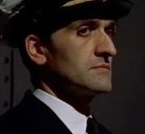
 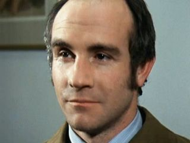
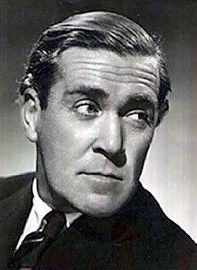
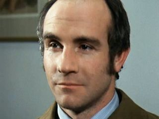
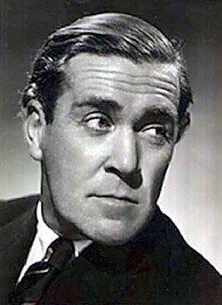
Koschei (The Master), Drax, Mortimus (The Monk), Magnus (The War Chief), Ushas (The Rani), The Doctor
Six members of the Deca.
130?? (2000 AD)
John Smith (Ulysses)
creates a new identity, that of Daniel Joyce. He is a Professor at the Berkeley Physics department. Joyce
works for the Advanced Research Project with Mr. Saldaamir. It provides grants to the Society. He begins
the Advanced Research Project experiments. Larna is his assistant. The Project might involve the next Universe.
?? The Doctor and the Master might have formed a band called the Gallifrey Academy Hot Five. If so then the Doctor played lead perigosto stick and the Master played drums. The academy faculty eventually closed the band down.
142 (about 50 years after turning 92)
The students at the Academy finally quit
teasing the Doctor about his Perigosto stick.
147~ (approximately 200 years before Venusian Lullaby / 3.5 billion BC)
The Doctor meets
Mrak-ecado
on Venus.
The Venusian lullabies the Doctor often sings are actually very offensive and vulgar.
150 (almost a century before graduating from the Time Academy)
The Doctor begins his cybernetics classes.
He eventually scores a 47% in Cybernetics.
?? (before the War Lord Aliens were expelled / before Divided Loyalties)
The War Lord Aliens and the
Gresaurus are among the off-worlders who are allowed to attend the Academy.
Any
alien coming to live on Gallifrey has to apply for Gallifreyan
Residency. To be approved they must pass certain health and
background checks as well as a test on knowledge of Gallifreyan
culture. If the application is rejected, the alien’s memories of
Time Lord interactions are forcibly blocked and then they are returned
to their home time zone. The only legal way to avoid this is to
marry a Gallifreyan, or serve as an ambassador for their
homeworld.
Given the name and their treatment by the Time Lords in War Games it is possible that the War Lord Aliens are also higher
evolutionaries like the Time Lords.
?? (probably when aliens were allowed to attend the Academy)
Aldridge was a Xing surgeon who worked
on Gallifrey for a time. The surgeons of the Xing Monastery are legendary for their, speed, accuracy, and painless
surgeries. The Doctor was aided by Aldridge several times, but always for a price.
?? The Doctor's two headed Godmother with a strong oder (Satthralope?). This Godmother gives him a Species Matcher Visual Recognition Device as a gift. The Doctor won't use this device until "Vincent and the Doctor." If the mirror can be placed in line of sight of an species the device will identify the species and its time and place of origin. The Doctor thought it was useless – but will still take it with him when he steals the TARDIS.
Quences
199.0
(year before Divided Loyalties / a year before is an adult / before the Doc has
a TARDIS /
day 162:
Otherstide)
The Doctor returns to the House of Lungbarrow
for Otherstide. Quences offers the Doctor the chance to become a Cardinal, but he refuses. The Doctor isn't
interested;
he wants to get his doctorate in thermodynamics.
Despite the fact that doctors are greatly honored in Gallifreyan society,
Satthralope thinks he's a disappointment to the House of Lungbarrow and forces Quences to disinherit and banish the Doctor.
This is probably when the Doctor loses his name, and
why
the Doctor considers his true name to be a very difficult question.
199.0? (possibly when he visits the Medusa Cascade at age 90 / 900 years
before Spore /
the Master was probably there to witness this /
while he was attending the Academy
/ probably when he is disinherited)
The Doctor loses the name
δ³Σx²
.
Finding it very hard to act rationally where family is concerned,
δ³Σx²
will hide the name that his family had given him in despair.
The Doctor's name is hidden inside the stars of the Cascade of Medusa (the center of a rift in time and space) where
it burns.
The Doctor single handedly seals the rift in the Medusa Cascade. This greatly impresses the Master
and the Doctor's teacher in Practical Temporal Technology. The Doctor will spend his whole life running
from his true identity.
Later, after he
becomes a renegade, he
will believe that there was only one situation that would make him reveal it.
But by the time of "Girl in the Fireplace" he will have forgotten what his original name was.
The Doctor thinks the Academy is awful and just wants to get his doctorate. He hates the nickname Theta Sigma that he got at the Academy. Instead, he chooses to refer to himself by the Gallifreyan title Doctor. In his mind Doctor might mean good man, and he sees it as a promise to himself to be impulsive, idealistic, ready to risk his life for a worthy cause - to hate tyranny and oppression. - never give in and never give up - to believe in good and fight evil - with violence all around him, to be a man of peace - to never be cruel, or cowardly - to be is a hero. It should be noted that people who possess a doctorate are greatly honored in Gallifreyan society. Despite this the Doctor will continue to be known as Theta Sigma in official Time Lord paper work.
199
(right before Divides Loyalties)
Vansell, Ushas, and Rallon are granted
the title of Junior Time Lords and given symbiotic nuclei.
They
are now in their final semesters at the Academy
.
Jelpax works in Azmael's Library. Vansell has learned how to hack into Co-ordinator Azmael's systems.
By this point Azmael and the Doctor
might have become more then friends.
?? Some of the Doctor's friends learn Internal Chronometry which allows them to know the exact time down to the nano-second.
199??
(before Divided Loyalties
/ ~1324 AD??)
The War Lord Aliens are among the off worlders
who are allowed to attend the Academy. They attempt to access the secrets of time travel and are banished from
Gallifrey. The
Gresaurus remain at the Academy.
199 At this point in Gallifreyan history the general population (including Junior Time Lords) are completely unaware that some Time Lords conduct long term research missions by actually visiting other worlds.
199.7
(several months before Divided Loyalties /
day 42~)
Millennia, and Rallon begin a relationship.
They are probably planning to have a wedding.
199.9
(right before Divided Loyalties)
Despite the fact that the Type 40 has already
been released, the Time Lords are currently testing some
refurbish Mark I, II, and III Type 30 TT Capsules. The most favored model of capsule at this time
is the
refurbished
Type 35
Mark IIIs.
200~
(right before Divides Loyalties)
By this point
Koschei, Drax, Mortimus, Magnus, Jelpax, Millennia, and Theta Sigma (the Doctor)
have 2 more semesters before they gain the rank of Junior Time Lords.
199.99
(a few days before Divided Loyalties /
less then 200 years after
Drall becomes
President)
The Great Citadel Mouse Hunt: In an unauthorized
experiment, Ushas (the Rani)
develops a way of making lifeforms grow from an embryo to maturity in a matter of minutes. An unexpected side
effect was that the creatures grew much larger then normal.
This might have been done using fluon radiation to expand the consciousness of the mice. Some of these
genetically engineered mice escape and attack the High Council. They kill President
Drall's CAT
(Calculating Animal with a Tail)
, and wound the President to
such a degree that he must regenerate.
He is the last President to have a Presidential CAT.
It takes a week for the Chancellery Guard to kill all of the escaped mice. The Doctor is probably involved
in this incident and he has serious complaints about the morality of her work. The fallout from this scandal
will
eventually lead to the Rani's exile.
199.99
(day 161)
Divided Loyalties: Quences tries to get the Doctor to return home for his Nameday by sending Badger to fetch him.
The Doctor refuses to go.
"Your destiny is yours, my boy. External forces can shape it, maybe even direct and influence it, but your destiny
lies within you and is determined by what you do with the events you are faced with."
-The Hermit
200
day 162:
Otherstide / the Doctor has been in the Academy for decades / the year he becomes an adult / 2 semesters before he was
supposed to become a Junior Time Lord
/ 1325 AD?)
Divided Loyalties:
The Doctor
receives his Majority and
is now considered to be an adult.
The Academy threatens to expel the Doctor if he doesn't obey his family and return to his House. The Doctor returns
to Mount Lung.
Suffering from his darkest day to date the Doctor meets with the Hermit who lives halfway up the mountain. The Hermit
shows him the wonder of life (daisies to be precise).
The Doctor gets a white, yellow and green daisy.
200 (The Doctor's 200th birthday)
The Doctor has a major rethink on the direction his life is going.
200 (Right after the Doctor gets the daisy /
600 years before Neverland)
Divided Loyalties: The Doctor and the Master illegally wire themselves into the Matrix and copy secret Time Lord files
(that are provided by the CIA for them to steal).
The Doctor, Rallon, and
Millennia
steal a Type 18 TTC (with Magnus's help), and
find the Toymaker. Only the Doctor returns to Gallifrey.
This is the last time the Doctor talks about breaching the Time Spiral until Well Mannered War.
Despite this, the Guardians (and other Great Old Ones) will continue the haunt the Doctor throughout the rest of his
lives because of the attention he drew to himself here.
Drax and Mortimus go into hiding.
Magnus works with a Gallifreyan scientific research department for the rest of his time at the Academy.
The Doctor is put on trial for the death of Rallon and Millennia. Borusa is held partially responsible for
his crimes. Azmael, Magnus, Jelpax, and Vansell attend the Doctor's sentencing.
Rallon and Millennia’s records are erased from Gallifreyan History.
The Doctor is expelled because of the scandal. He is sentenced to 500 years of service in the records
area and traffic control. If the Doctor can obtain his doctorate in his spare time, then he can reapply to the
Academy.
The House of Lungbarrow would be quite happy if all of the Doctor's deeds were erased from history.
This is probably the last time Runcible meets with the Doctor.
?? (after the Divided Loyalties flashback)
The Hermit is sent away by Quences because he is too expensive and a bad influence on the Doctor.
? When the Doctor reacts instinctively he tends to take the
moral or ethical path. But when he thinks about his actions he sometimes chooses to be less ethical (though
this varies from incarnation to incarnation).
The Doctor
believes in the importance of hope,
and
probably feels that instinct is more important than responsibility, duty, and detachment.
Despite this, he views doubt as the engine that drives his mind.
The more often the risks he takes fail to pay off the more he is drawn under the control of the dark side of his mind.
He has subconscious thoughts that he is not proud of, including doubts about how he has spent his life, the way
he has treated other beings, guilt, arrogance, selfishness, and lust. These make up
his Dark Design
(the dark side of his mind). His sense of self-loathing is such
that he is confident that he hates himself more then anyone else in the
Universe hates him. This probably stems from his giving the Master over to
Death. The Doctor's greatest fear is that he will lose his sanity (something that almost always happens to inventive
Time Lords).
The Doctor considers himself to have an obsessive compulsive disorder when it comes to investigating mysteries and
believes one should alway search for truth.
The Doctor does not approve of fiction and fantasy. He believes that truth of the past has more then sufficient
stories for anyone.
His (sometimes
selfish) greed for knowledge is his greatest personal demon and weakness (though it will take him some centuries to
realize this).
200~
(about 900 years before Neverland)
The Doctor realizes that all life relies on the death of others in one way or another.
He concludes that everyone must make the best of the present moment, and
continues to believe in hope.
The Doctor starts deliberately risking his life for others. He does this in part because of the guilt he feels
about killing Torvic,
but he is also being driven by his own dark design (the dark side of his mind) to seek danger and risk.
The fact that he prefers feeling pain to numbness,
might play into this as well.
The Doctor dislikes weapons but admits they are useful sometimes.
The Doctor doesn't seem to regard lifeforms with no individuality as being worth as much as other sentient life.
When confronted by something terrifying or dangerous the Doctor tries to imagine they are phantasms or dreams rather
then real life. This helps keep him from panicking.
For this reason, the Doctor is very good at handling multiple crisis but lacks the strength to deal with
day to day problems.
After becoming a renegade,
he will deliberately avoids facing those sorts of problems (like, jobs, family, etc…) by
never sticking around after solving a major problem.
200?? (during his Gap Century
/ possibly between being thrown out of the Academy and re-applying)
As part of his sentence of serving in the records area and traffic control, the Doctor works as a courier
at the vast Desiree Spaceport. He is eventually fired for continually getting lost.
The Doctor suffers from severe catabolism. He recovers but loses most of his dexterity and acrobatic skill. His joints will suffer from rheumatism when he is cold. His legs are weak and he will suffer terrible back pain whenever he has to ride a horse. He will eventually become vulnerable to altitude sickness. From this point on he resents this body and longs for regeneration. He might have also lost some memory from this incident.
NOTE (Courtesy of Alexander Dante): A catabolism is a metabolic reaction which usually occurs when the body is unable to properly utilize nutrients and breaks down some of its more complex substances (such as muscle) to generate ATP which in turn produces a high-energy charge used for other metabolic processes such as anabolism. A severe catabolism could cover anything from loss of bone density to reduced organic function. Presumably we are talking about a brain catabolism, ie. the conversion of brain tissue into ATP.
?? (before Flashback)
Magnus (the War Chief) regenerates at least once against the advice of the Doctor (who thinks he's wasting his lives). Despite longing for a regeneration himself, the Doctor refuses to take Magnus' recommendation to regenerate.
20
1? (2 semesters after the Divided Loyalty flashback)
Drax, and Mortimus (the Monk) eventually emerge from hiding and return to the Academy.
Koschei, Drax, Mortimus, Magnus, an Jelpax
receive their
symbiotic nuclei and
gains the rank of Junior Grade Time Lord
.
211
(900 years before the War
/ 1332 AD?)
The House of Dvora begins subtly preventing
various lesser species from obtaining time travel. This ranges from nosy observation to quietly erasing the
inventors from history.
??
(while at the Academy)
After learning that Gallifreyan religious
beliefs are no more valid then the mythology of any other world, Mortimus (the Monk) becomes interested in politics
and tries to
create a purpose out of nothing.
He believes that the destruction of the Minyans was a fluke that has kept the Time Lords from helping other civilizations.
??
(at the end of his time at the Academy)
Mortimus
(the Monk) drops out of the Academy and becomes an initiate at a
college of scholars in the Capitol who specialize in keeping secrets.
The Consolidator
?? (centuries after the creation of the Consolidator / when
the Doctor and the Master were graduates / before they became Time Lords)
After
centuries of debate on what to do with the cargo of the Consolidator it
was decided that the station should be sent through a time rift into
Gallifrey’s distant future so that future generations of Time Lords to
decide its fate. But not even the most senior Time Lords could
generate a time rift large enough to hold the Consolidator.
Eventually the Doctor and Master, two of the Academy’s most promising
graduates, were asked to find a solution. After a great deal of
work the Doctor pronounced the problem insolvable, but the Master had a
sudden flash of insight that allowed him to see the true nature of time
in a way that his peers had never conceived of. He realizes that
the collapse of a super massive star would create the necessary charge,
angular momentum, and Hawking temperature to forge a stable time
corridor. The Master offered the Doctor the chance to share
credit for his discovery the Doctor refused, believing that the Time
Lords were behaving irresponsibly by pawning the Consolidator off on
future generations. The High Council approved the Master’s plan
and awarded him the highest academic merit. The High Council saw
the Doctor as a disappointment and this created a sense of inadequacy
that nag at the Doctor until his third incarnation and beyond.
??
(before The Aztecs / after being expelled
/ before the class of 92 graduation)
The Doctor becomes an engineer.
After studying in his spare time, the Doctor obtains an honorary
Doctorate, specializing in Thermodynamics.
He probably re-
enrolls in the Time Academy for a second time, claiming that he was a late developer.
?
(after Divides Loyalties /
possibly before the Doctor starts playing the perigosto Stick Game)
The Doctor receives his symbiotic nuclei
and
gains the rank of Junior Grade Time Lord
.
The symbiotic nuclei he receives will wire him into the Vortex and, unknown to himself and most of the Time Lords, allow
his subconscious to bend the timelines of others. On an unconscious level he affects everyone around him.
In addition to the nuclei,
the
Doctor has things in his biodata that no other Time Lord has. He
is a living equation, a function of the Universe.
? (while at the Academy)
The Doctor skips Sendok's class on Transdimensionl Locus Attraction Dynamics and instead attends Theory and Practice of Yo-Yos and Juggling for Beginners.
? (probably shortly before
graduating)
The Doctor serves as a Technician.
He has partial access to the Matrix.
The Doctor doesn’t believe that the Matrix is alive, and sees the stored minds as mere echoes.
He considers Gallifrey's reliance on the predictions of the Matrix to be a an unhealthy form of ancestor worship.
?? (before Venusian Lullaby)
The Doctor acquires a sonic screwdriver.
? The Doctor becomes good friends with Technician Damon (an Arcalian ).
? (when he was a young Time Lord)
The Doctor spends time mapping chromosomal
origins.
234.2
(
515.8 years before Deadly Assassin /
Matrix Date 5725.3
Matrix Date /
~900 years before the War
/ probably while Aliens were allowed to attend the Time Academy)
Morbius secretly beings forming the Cult of Morbius.
Morbius recruits lesser species into House Dvora, which was Gallifrey’s first real contact with lesser species
in over 10,000 years. The new “cousins” formed the Cult of Morbius and worshiped him as a god.
This cult was drawn from students at the Time Academy and was dedicated to re-shaping Time Lord society. The
Gresaurus (who were attending the Academy)
might have been among them.
Morbius
recruits millions
of
non-Gallifreyan
Gaztak
space pirates and
mercenaries.
He promises his mercenary followers eternal life.
He tries to create an army to conquer the Universe.
The Time Lords in the Cult of Morbius went on to become a major power block in the High Council.
?? (a long time before Doc steals the TARDIS)
The Doctor visits outer Gallifrey for
the last time.
?? The Doctor receives a 43% on Practical Temporal Technology, and a 39% on Temporal Theory. He gets a 2% in Quasitronic Temporal Technology.
?? Drax is forced to resign from the Academy because of his failures in temporal theory.
236 ( Date Index 3094692)The Doctor takes his final exams. It is his second and last allowable attempt to graduate. And his third attempt to pass his final exam in Temporal Theory. He deliberately gets the lowest possible passing grade so that no one will pay much attention to him and his actions in his later life. Borusa’s recommended score for the Doctor is a 30% but he is give a 51% in Temporal Engineering, by the Education Committee for the Academy of Time Lords of Gallifrey. This earns him a Double Gamma score. He is 29th in his class - though only 26 students have survived to graduate.
?? (while at the Academy)
Romana will later claim that the Doctor never
received any certificates. But by the end of his time at the Academy he had been awarded a
certificate of Dimensional Engineering
,
a Certificate in Time Flow Mechanics, and a Gallifrey Lifesaver's Certificate.
Braxiatel
236 (while the Doctor is taking his final exams / 1348 AD?)
After carefully setting himself up as the ideal candidate for the job of off-world representative for Gallifrey Irving Braxiatel then makes a big deal about how much he would 'hate' to be sent off world. (As he hoped) he is appoint as Gallifrey’s unofficial ambassador to the rest of the Universe. He does several secret missions for the Time Lords.
The Doctor and Koschei (the Master)
The Class of 92 (also known as the Class of the 4th Millennium) graduates. The Doctor and Ruath sabotage the Panopticon Graduation, making it take place in mid-air. Possibly as a going-away present, the Rani also arranged to have a giant mouse released at the graduation. The Doctor takes an oath to protect the Law of Gallifrey. Borusa's star pupil Jelpax graduates head of the Class. He is the only member of the Deca whose graduation isn't tarnished by the group's activities. Koschei (The Master) graduates with a Masters in Cosmic Science. Galah graduates. The Doctor barely graduates with a 51% in Temporal Engineering, which earns him a Double Gamma score. He receives a Certificate in Time Flow Mechanics at that time. He is a Time Lord. Drax gives the Doctor the famous fob watch (which shows 3 different times) as a graduation present. There are 26 graduating members of the class of '92 in all, include Jelpax, Koschei, Ruath, Magnus (the War Chief) , Anzor, Cheevah, Tebediatroculozan, and the Doctor. The number of future renegades in this class is greater then the total number of prior renegades for the entire history of the Academy. By the time the Doctor was in his seventh incarnation two of these 26 graduates would be dead and three more would have retired due to injuries. Quences might have given Badger to the Doctor as a graduation present.
?? The Doctor's Biodata could have been rewritten so he might not have been a Time Lord?
?? (possibly when he aquires the TARDIS? / It might be the same ring the Morbius Doctor wore when he was married to Patience)
The Doctor acquires the ring with the blue stone and can interface with a TARDIS powers systems. If given the right spectrum of light it is also capable of unjamming a TARDIS's lock. It is also capable of breaking hypnotic states (Could it be a Metabelis Blue Sapphire??) Mortimus will also wear an identical ring, and the Rani will wear a red stoned ring. These pieces of jewelry have amazing powers and appears to serve as a back up Artron Energy source, that can be used to jump-start the TARDIS and assist in regeneration. Once the Time Lord has regenerated the ring might be useless.
236? Koschei (the Master) throws the Doctor a very bad End of Term party.
236~ (after graduation)
Koschei (the Master) becomes a Cosmic Theoretician. His understanding of temporal physics is equal or greater than the Doctor’s. Vansell leaves the Academy and becomes a member of the CIA. He eventually rises to the rank of Coordinator of the CIA. Jelpax becomes one of the Time Lord's major Recorders. His Time Team is responsible for monitoring four or five major galaxies. Galah becomes a sculptor. Despite graduating as an Apprentice Time Lord, no colleges want the Doctor for his post doctoral work.
236? (after graduation)
Ushas tries to get a Rani-ship. Ushas (the Rani) becomes a brilliant Neuro-Chemist. She is also amazingly good at almost every other task she sets herself too. She was considered to be a trustworthy Time Lady for some time.
236? (after graduation)
Koschei tries to get his Masters.
?? (thousands of years before The Silurians - this probably applies to the Morbius Doctors)
The Doctor becomes a scientist. The Doctor is a specialist in the field of Macro-Cosmology.
236? (during the renegade generation)
The Doctor, Master, and several other future renegades do their best to get themselves assigned to Field Research Teams, but such positions are usually rewards for assisting elder Time Lords in their political activities.
The Type 40 TARDIS that chose the Doctor
236
(523 years before the Pirate Planet)
Since the Doctor doesn't have his own of the TARDIS
he is not a full
Time Lord but
only an Apprentice Time Lord.
A TARDIS is designed for a crew of 6. The Doctor serves as
one of 5
Apprentice Time Lords aboard
another Senior Time Lord's
TARDIS.
This TARDIS is the Type 40 TARDIS that picked the Doctor
on the first day at the Academy.
The first thing the Doctor says when he sees the TARDIS is “You are the most beautiful thing I’ve ever
known.” She forms a
temporary symbiotic bonds with the Doctor
and the other apprentices.
To the Doctor, being inside the TARDIS feels like being hugged by his mother.
It is quite possible that the Senior Time Lord in question was the Doctor's favorite teacher, Azmael.
If Azmael was the one who introduced the Doctor to all of time and space it could explain why they are such close
friends.
The
Doctor will see Azmael as one of his few confidants.
They might have eventually become more then friends.
The Doctor will spend decades serving on board this TARDIS as an apprentice observer.
Because the Doctor is now leaving Gallifrey, this is when information about him starts becoming available to the
rest of the Spiral Politic.
The Doctor's TARDIS's priority deactivation code is Theta-Sigma-74384338. Because the Type 40 TARDIS belonged
to the Doctor's step-uncle, Marnal,
the TARDIS is considered a Lungbarrow family heirloom.
?? (probably when the Doctor first linked with the TARDIS)
The TARDIS occasionally leaves the Doctor
"welcome aboard" gifts.
236 (when the Doctor is 236)
The Order of the Silence will find it very
difficult to get complete data on the first 236 years of the Doctor’s life. This is due to Gallifrey being
time-locked. But after the Doctor starts serving on a TARDIS and leaving Gallifrey information about him is easier
to find.
240~? (not long after graduation)
Mortimus (the
Monk) is assigned to an anthropological field research group. The
group studies Sol III (the Earth).
?? (while doing field work)
Mortimus (the Monk) regenerates for the first
time.
?? (sometime after the Master’s plan is approved / a
good amount of time before the Doctor and Master left Gallifrey)
The Time Lords locate the right type
of super massive star that is on the verge of collapse into a black hole. But the collapse wasn’t perfectly
balanced, leading to the apparent destruction of the Consolidator. The Master and the Doctor both witness this
destruction. This failure was a massive embarrassment for the Time Lords as they had violated Article 7 and
committed genocide several times over. These events are considered to be one of the most infamous incidents
in Gallifreyan History. The existence of the Consolidator and its fate was covered up as best as possible and
most references to the event were stricken from official records. Because of this the Master suffered little
fallout for the failure of his plan. In truth the Master’s calculations had been largely correct but
the Consolidator was sent millions of years into the future instead of mere centuries as planned.
This scandal might have led to Morbius being elected.
249~ (500 years before The Android Invasion)
The Type 40 TARDIS last receives its 500
year service.
250~? (centuries before Indestructible Man)
The TARDIS
voice-interaction circuits of the Doctor's Type 40 TARDIS break.
Mount Plutarch
and the Master's TARDIS
?? Koschei (the Master) travels to Mt Plutarch to meet the Kingmaker. He is granted a TARDIS. The Type 45 (Mark II) TARDIS, named Lolita, forms symbiotic bonds with the Master.
??
(While at the Academy / while
they have access to a TARDIS)
The Master has always been obsessed with the
Necronomicon. The Master tells the Doctor about the mysterious Great Old One Valdemar
.
The two of them breach the
back time field buffers
and travel into Gallifrey's past to learn the secrets of the Old Ones. They find nothing but warnings of Valdemar's
power.
250 (200 years before Dark Path /
While they were students)
The Doctor and the Koschei go their separate
ways after the Master fails to keep his word.
This is the last time the Doctor sees Koschei (the Master) until The Dark Path.
?? (after graduation / probably after being granted a TARDIS)
Koschei (the Master) undertakes field studies
of historical interplay and temporal structure.
He believes the Blinovitch Limitation Effect is nothing but a children’s story used by the High Council to keep
people from breaking the Laws of Time. The Master has nearly unparalleled understanding of temporal engineering
and an
understanding of temporal physics is equal or greater than the Doctor’s.
251 (When the Doctor is 251 years old /
before the Doctor left Gallifrey)
The High Council learns that Azmael used to work with Rassilon. In fear of this, the President has him removed
from his job as Co-ordinator of the Matrix.
Because he was tired of the persecution from the High Council
of Gallifrey,
Azmael leaves Gallifrey
by stowing away on a TARDIS that was conducting field research
on Vitrol Minor.
Azmael settles on Vitrol Minor.
The High Council declares him to be the first Renegade Time Lord. By this point Azmael and the Doctor
might have become more then friends.
When the Doctor learns that the Hermit
Azmael has left Gallifrey, he feels as if his father has died.
251?
(probably after Azmael leaves Gallifrey)
The Old Matrix Coordinator (from
the novelization of Colony in Space)
becomes Co-ordinator of the Matrix.
This coordinator was probably named Zon, given that Zon had spent thousands of years serving as coordinator sometime
before Engin took over.
Zon is very proud of the Time Lords and the Matrix. Given that he has held the Key of Rassilon for thousands
of years he is very likely the Coordinator of the Matrix who preceded Engin. He has only regenerated once by
the time of Trial of a Time Lord.
~251 (500 years before he gets K-9)
The Doctor claimed he didn't need anyone
like K-9 (his second best fried) after this point.
This could be the last time he receives aid from Badger or when Anzor is no longer a threat.
~251? (~900 years before the War / the Morbius Crisis)
President
Elect
Morbius wants the Time Lords to interfere with the lesser species by reforming the Spiral Politic.
He hopes that this will restore the spirit of the Time Lords and make them a universe spanning power.
He advocates repealing the Laws of Time and the recreating of History to suit the House of Dvora.
Morbius was one of the Doctor’s heroes.
??
The Arcalian Arkendolirunahain (Arkendo) becomes a Cardinal on the Supreme Council.
He is one of the youngest Time Lords to serve on the Supreme Council. He is one of the first members of the
Council to speak out for the cause of Intervention.
255 Jonuratanandrusa (Joe) is loomed. He will become a Prydonian. The Master will eventually become his mentor at the Academy and Joe will eventually become a field agent for the CIA.
259 (centuries before Invasion of Time / 23 years after the Doctor Graduates / sometime after the Doctor's birth / before they are all de-registered)The Type 40 TARDIS are classified as Veteran and Vintage Vehicles and begin to be withdrawn from most forms of service. Since each full Time Lords must own a TARDIS to maintain his full rank, it might have taken a 50 years or more to complete this process.
?? The Doctor publishes some papers.
?? (~2700 AD)
A race of time-sensitive aliens known as the Legions
are convicted by the CIA for using their abilities to undermine
galactic business. As Agent Provocateur for the High Council,
Mortimus (the Monk) helps establish temporal inhibitors around the
Legions' home planet. The sentence is to last for 150,000 years.
?? Mortimus (the Monk) encounters the Celestial Toymaker, but is released.
?? (While doing field work)
Mortimus (the Monk) regenerates for the second time.
The "Old Castellan" (probably Rannex) comes up with a theory for Universal Relativity.
-271?~
(probably before Morbius was Exiled
/ 10-20 years before the final battle on Karn)
A Witch-Queen of the Pythia
and a Sister of the Flame named Lady Peinforte becomes a renegade and
attends Morbius' rallies. She share's his
though they argue a lot.
She becomes
Morbius' mistress and lover.
Morbius and Peinforte secretly have two children known as the Children of Contempt. Their son became known as
Cardinal Grandier on Gallifrey, and Leofric DeSable elsewhere in the cosmos. His chosen title was the Chaplin
of Spite. Their daughter was known as Madame Clacice Beauvier.
Chatelain Thessalia
272 (879 years before the War began / before Morbius becomes President? / after Borusa finished teaching the Doctor)
Patrexian Councilor Morbius secretly orders the creation of the Order of the Weal (aka the Order of the Good) , which becomes the Time Lords first counter intelligence service. This ruthless group of rationalists wasn’t allied with any particular House or Chapter. Chatalaine Thessalia of the abandoned House of Ixion becomes its first Chatelaine director if the Order, and the Order was based at the House of Ixion. It is rumored that Morbius is romantically involved with Thessalia. Junior Cardinal Borusa of the Prydon Chapter will also be a member.
272 (879 years before the War / 10 years before Morbius becomes President / almost 900 years before the 101-Project)
House Arpexia begins Catherion Imprimatur experiment (probably at the request of Morbius). They attempt to produce a sentient type of Casts called Babels. The Babels would be able to control the Casts without relying input from Gallifrey, making them an independent military force. The Babels were produced using the disused Loom of the House of Catherion, which was purchased from its Chapter. The Order of the Weal probably has a hand in their creation.
272~ (around the time that the Order of the Weal is created)
There are rumors that the Interventionists
might have altered Gallifrey’s mythology using the Eye of Harmony.
?? (probably after the loss of the Consolidator)
The Time Lords imprison the Crustacoids in a house on 20th
century Earth when they threaten to take over the Universe. The Doctor helps program the security robots that
keep them imprisoned.
It's possible that he doesn't actually visits Earth at this point.
?? (before stealing the Type 40, during the Doctor's youth)
The Doctor is granted a Type 50 TARDIS and becomes a Senior Time Lord. The symbiotic link that this TARDIS shares
with the Doctor is much stronger then the Doctor realizes.
The Doctor
275 (525 years before Well Mannered War /
while in his first incarnation / before achieving high office / before leaving Gallifrey)
The Doctor gets into the "business" of saving the universe.
The Doctor was instilled with the "Gallifreyan work ethic" of service
and this will be a motivator for the rest of his lives.
This decision might have been inspired by regret over giving Koschei to Death.
The Doctor decides to live his life by Omega's values, which include using time travel to make the universe a
better place.
The Doctor speaks out, and claims that the Time Lords should use their great powers to help the lesser races. He
quotes the ancient children's lesson "
There are some corners of the Universe which have bred the most terrible things. Things which act against everything
we believe in. They must be fought.
"
The Doctor believes that one could not 'be good,' one can only only 'do good.'
The Doctor sees good and evil as a processes
and believes that evil is an actual force that needed to be fought.
He believes that there are split second nexus points where the balance between good and evil can be tipped the wrong
way. He will spend most of his life trying to find those moments.
The Doctor fights darkness, evil, pain, death, and sorrow but he can never defeat them utterly for fear that himself
or others will become evil.
He becomes well know on Gallifrey for this black and white thinking
.
The Doctor does not approve of fiction and fantasy. He believes that truth of the past has more then sufficient
stories for anyone.
275?
(during his first incarnation)
As a representative of the Time Lords the
Doctor undertakes missions which bring him in contact with the Voord and the Daleks.
The Doctor is sent to the inauguration of the Chimera J7 Space Station in the Third Zone to represent the Time Lords and present fraternal greetings from the High Council. Other Time Lord technicians pilot the TARDIS for him but he makes notes in his diary of how they operate the ship.
?? (before leaving Gallifrey)
The Doctor begins planning to create
the Institute of Time at the forward edge of the Time Lord noosphere (about 10,000,000 AD).
The End: The Doctor visits the end the Universe and sees the remains of the Institute of Time that his 8th incarnation will later create. He sees that a new Universe is about to be born out of the ashes of this one.
?? (centuries before Borderlines / before the Doc's reputation is ruined / before he achieves a high office / after speaking out against the Doctrine of Non-Interference)
Peinforte and the Doctor encounter each other for the first time. They won't meet again till Borderlines. Peinforte is a powerful telepath and hypnotist.
?? (before Deadly Reunion)
The Doctor serves on the Supreme Council.
Several (or all) of the events that I have attributed to the "Morbius Doctors" could also occur at this point. Indeed
it is possible (but unlikely) that the Morbius Doctor's themselves should be found at this point in the timeline.
(see
Middle Gallifrey - Morbius Doctors
)
?? (A long time before Arc of Infinity)
The Doctor becomes friends with the Time
Lord who will become Castellan in Arc of Infinity. This Castellan is horrified by what Gallifrey did during
the Dark Times.
?? (probably before The Five Doctors)
The Doctor meets Flavia.
The Doctor meets Lord Bulek of the CIA. At this point Bulek is around is over 1000 but less then 1500 years old.
President Morbius
282 (468 years before Deadly Assassin/ 4 years before his execution / Before Morbius is exiled / 10 years after the Order of the Weal is created / while Morbius is still surprisingly young )
With help of his secret cult members on the High Council, Morbius of the Patrexian Newblood House of Dvora is elected as the 400th Lord President of Gallifrey, becoming a Time Lord of the First Rank. Publicly Morbius claims that degeneracy and megalomania of the High Council is damaging the common good of Gallifreyan society. He also supports the idea that non-Prydonians should be allowed to become President. Morbius is the first politically ambitious Time Lord in memory and is quite popular with the Patrex and Arcal Chapters. His Chancellor is the Patrexian Sara and he has conspirators in the CIA. He takes enormous interest in the Spiral Politic. This is the beginning of the Imperator Era. Morbius is one of the Doctor’s heroes.
?? The Type 51 Mark III Scout TARDIS is created. It is designed as a recon TARDIS and has upgraded scanner, perception filter, and chameleon circuit.
282? (after becoming President)
Morbius
removes some of Gallifrey's Validium from the Slaughterhouse. This appears to be the only weapon he removed.
Morbius gives the Validium he stole to Lady Peinforte for safe keeping in case his war fails.
Peinforte
launches it into space aboard an asteroid rocket sled.
The Validium
is sent to Earth and
crashes there in 1638 AD.
?? (before his execution)
Morbius created another Stellar Manipulator.
The manipulator has a remote activator that looks like a medallion.
?? The Vaspen Space-Time Stamp is developed. Using a single-hop drive, it allows a package to be instantly transported to any point in space and time. Each stamp costs more then a planet. Because of the devastating potential to damage history these stamps were banned by the Time Lords. This might be the technology behind the Gallifreyan hyper-message cubes, and Gallifreyan secure delivery capsules.
?? The Time Lords try to prevent the Philadelphia Experiment from being performed on the USS Eldridge but the ship still ends up lost in a dimensional wormhole.
?? (while working with the Time Lords / after he starts calling
himself 'the Doctor')
From Eternity: The Doctor and several other
Time Lords make contact with an vastly powerful entity that lives its life in reveres and was created at the time of
Event 2. The entity confesses that its lack of understanding of time and its need for companionship led it to
destroy several civilizations.
?? By this point the Doctor is widely regarded as a possible future President of Gallifrey.
282? (before being impeached / ~2960 AD??)Believing that the outside universe is a danger to Gallifrey Morbius adopts a radical pro-intervention and pro-military stance. He secretly believes that, as gods, the Time Lords have the responsibility to take control of the Universe and prevent suffering, injustice, and death. He long term goal is to create an army to conquer the Universe. Morbius is responsible for inspiring the Renegade Generation. Morbius continues to grow his cult of mercenaries. Morbius was still technically president while he was gathering his followers. The Cult is funded by resources stolen from the CIA. Their mission is to conquer the Mutter's Stellian Spiral.
284 (48 years after Graduation??
/
sometime after graduation /
not to long before becoming a renegade / during his first incarnation)
The Doctor obtains a prestigious and distinguished position in in the Prydonian Chapter house's Bureau of Possible Events.
He serves on the
High Council for many years.
His role was to observed the Universe, gather knowledge, and ensured no violations of the Laws of Time occurred.
At this point many believe that the Doctor will eventually become Lord President of Gallifrey.
?? (70 years after Graduating
/ probably before Pundat III is elected
)
The Doctor petitions to have the
Miniscopes banned by Intergalactic Law in 9 Galaxies because they are an offense against sentient lifeforms.
He is successful and almost all of the machines are destroyed before they can come into common use.
The Doctor's role in this is well know throughout the 9 Galaxies. Brax writes the legislation that outlaws the
Time Scoop in the 12 Galaxies.
It is possible that the Miniscope might have been of Gallifreyan manufacture, or might have been built by a civilization
that was friendly to the Time Lords. It’s very similar to the Death Zone technology.
?? The Time Lords ban Black Hole Drive technology throughout the Seven Systems.
?? (by the time of The Nameless City / probably before the
Doctor left Gallifrey)
By this point the Time Lords have saved
millions of worlds in many galaxies by policing history and stopping temporal marauders.
The Order of the Weal, chaired by Junior Cardinal Borusa of the Prydon Chapter, devises a plan to expose Morbius' paranoia. They obtain a confession of his conspirators in the CIA and present them to the High Council, which lead to President Morbius being unanimously impeached by the Emergency High Council. The Council also annulled all his decisions and laws from the point where his actions of High Treason began and institute a law preventing him from being President again.
284.7 (after Morbius is impeached)
The emergency High Council enacts a legislation that prevents any President who is impeached for High Treason against Gallifrey from ever holding office again. This is done to prevent the impeached President Morbius from running for election and becoming President. Its believed that he has enough support among the people to win an election.
284.7 (the Doctor recognizes Morbius' face / before Morbius is executed / before The Infinity Doctors)
Upon his return to Gallifrey, Morbius is deposed and put on trial for High Treason. His sentence of vaporization is commuted because of his standing as a Time Lord of the first rank. Instead he is exiled to the planet Darkeen in the year 2966 AD. At this point Morbius still has the popular support of the Gallifrey even if the government has sided against him and several of his supporters leave Gallifrey with him.
284.7?? (within 48 hours of Morbius being deposed)
The Prydonian Pandad VIII is made Acting President of Gallifrey for the duration of the Morbius Crisis.
284.7? Borusa beings running Gallifrey from behind the scenes. He is also a Jurist. He believes that only in mathematics will one find truth. The Doctor believed that his psionic professor (probably Borusa) was the only person who truly understood Artron Energy.
?? (before all aliens were forbidden to visit Gallifrey / before the Doctor left Gallifrey)
Aldridge closed his practice on Gallifrey because he found the Time Lords pompous, particularly in calling themselves "Time Lords".
?? (after Divided Loyalties flashback / Probably when Morbius is deposed at it appears to have been his idea to let them on Gallifrey)
Policy is changed so that all aliens are forbidden to visit Gallifrey. Some Time Lords would later claim that the visiting aliens were not allowed to leave Gallifrey and were executed if they tried to leave or plan an invasion.
284.8? (after forming the Cult / 1 million years after the last time the Time Lords interacted with the outside universe)
Morbius’s army attacked hundreds of civilizations in an attempt to bring order to the Universe (including Solos and Kastria). Most of his targets are in and around the Constellation of Kasterborous. Over a dozen planets were destroyed by his army. The existence of the Time Lords becomes widely know because of Morbius’s actions. The High Council panics. This is the first time in a million years that the Time Lords have interacted on a large scale with the outside Universe. The parts of history that Morbius interacted with remain linked with Gallifrey local time (in accordance with the Laws of Time).
284.8?? The Kastrians learn of the Time Lords and their pledge to protect the cosmos from temporal marauders Others who learn of the existence of the Time Lords include the Andromedans, the Bandrils, the Cryons, the Cybermen, the Daleks, the Family of Blood, Fenric, the Forest of Cheem, the Keeper of Traken, the Mentors of Thoros Beta, Prisoner Zero, the Saturnynians, the Shadow Proclamation, the Sontarans, the people of the Third Zone, the Tractators, and the Vardans.
284.8
(the same year as Morbius is exiled
)
The Time Lords are shocked and horrified by
the actions of
the Morbius Cult. The
Matricians privately theorize that the Looms may be suffering from retro-shock caused by some future catastrophe.
This retro-shock could be causing the rash of unstable Gallifreyans.
Morbius becomes known as the First Renegade. The idea of leaving Gallifrey and interfering with other cultures
is seeded into Gallifreyan Culture.
285.7
(1 year before the execution / Before Borusa teaches the Doctor at the Academy / Possibly after the Doctor stole his
TARDIS / After the Doctor left Gallifrey /
after the Doctor is born /
2967 AD)
Warmonger Part 1: At the Doctor's (age
850) request the Time Lords form an Alliance to fight Morbius. The Doctor is named Supreme Coordinator of the
Alliance against the Cult of Morbius. The Alliance is composed of Cybermen, Sontarans, Draconians, Humans from
Martak, Martians and even some Ogrons. The Alliance is funded by the CIA. The Capitol Guard hasn't been
involved in combat for generations.
286.7 (After the Alliance against Morbius forms but right before
the final battle / After Morbius and Peinforte are on Karn / 10-20 years after the Children of Contempt are born)
Peinfort leaves Karn with Clacice while
the Chaplin of Spite steals Morbius’s escape ship and leaves Karn. Both of them will slowly prepare to become
the champions of Time and the other Gods.
Warmonger Part 2 / The Battle of Karn: Morbius and his army try to capture Karn, but they are defeated by the Alliance of the Sisterhood of the Flame and the Time Lords. The Battle of Karn devastates the civilization and planet of Karn and most of the people living there move away. Many species came to witness Morbius's trial. One of Morbius's followers was Menhandri Solon, and he was a Terran doctor specializing in Micro-surgical techniques in tissue transplants. Morbius becomes the first Time Lord to be executed by his own people. Morbius was executed to show that the Time Lords followed a code of justice and to deter any lesser species from attacking Gallifrey. This is the first execution in Time Lord history. The vaporization is carried out on the planet Karn - scattering his body to the nine corners of the Universe. Even his biodata extract on Gallifrey was destroyed. But Solon saved Morbius' brain from disintegration. The Sisterhood of the Flame begin crashing any ships that attempt to land on Karn. In the aftermath there is talk by Acting President Saran about creating a United Planet Organization to ensure peace in the Galaxy. The Morbius crisis becomes known as the Imperator Era by the Time Lords and becomes a major turning point as species all over the Universe now know of the Time Lords' existence. Over the years, Morbius' brain will go slowly mad. The Cult of Morbius will continue to exist for decades but will consist of little more the immortality seeking mercenaries.
286.7?? (after Morbius' execution)
The Arcalian Benncuiq IV documents the events of the Morbius Crisis in The Trial of the First Renegade.
286.7?? (right after Morbius is executed / probably takes a few years to arrange the inauguration / no more then 200 years before the next President)
Patrexian Saran is elected the President- Elect of Gallifrey.
The Validium Nemesis Statue
Peinforte uses her mental powers to leave Karn and travel to Earth. She kills 5 of the Sisterhood while escaping and steals some Elixir to ensure her immortality. Peinforte arrives in on the Earth in 1638 and marries Sir Roger Peinforte but he quickly died. Reverend Mother Maren asks the High Council to find and execute her. The High Council monitor the cosmos for her. If she attempts to leave Earth she will be detected, captured, and destroyed. Lady Peinforte fashions the stolen Validium into a statue that looks just like her and calls it Nemesis (meaning retribution). She becomes the Mistress of the Nemesis. The Nemesis tell her of many secrets from the Time of Chaos including secrets about the Doctor from that time such as the fact that the Doctor is the Other. The Nemesis provides protection for Peinforte.
?? (before leaving Gallifrey)
The Doctor's protesting leads to the banning of a Disruption Agent invented by another Time Lord. This agent converts vertebrate blood into acid.
286.7 ( 1381 AD??)
The Time Lords reluctantly begin dispatching representatives to attend the Intergalactic Tribunal. This is probably when the position of Off-World Ambassador is created.
?? The Time Lords receive several Holiday Balls from the Salakans. Unbeknownst to the Time Lords these Balls allow the Salakans to spy on the Time Lords.
?? (probably before the Doctor leaves Gallifrey)
The Arcalian exobiologist Crahin puts forth the theory that since the Sontarans are a genetically engineered species, they may have been created with the express purpose of keeping down the Rutan population.
286.7 (at the time of fall of Morbius)
Magnus (the War Chief) sees Morbius's failure as owning to how high profile his actions were. He realizes that any attempt to gain power must happen from the shadows.
286.7 (after the Morbius Crisis)
These events cause the popularity of the intervention groups to rise. The CIA is the most influential (and oldest) of these groups. Having dealt with Morbius, the Order of the Weal now believes that the CIA is the greatest internal danger to Gallifrey. Despite the Morbius crisis, the Order of the Weal continued to revere Morbius.
290?
(no more then 200 years before Slann becomes President /
More then 4 years after Saran becomes President)
Pundat III, cousin to Pundat I (one of the previous Presidents), becomes the
403rd
President of Gallifrey. This President was considered to be very corrupt.
He institutes several new anti-intervention policies.
Arcalian Cardinal Arkendo (Arkendolirunahain) protests this but to no avail.
?? (
long before “Timewrym: Apocalypse)
The Doctor suffers a massive crisis of faith as he realizes that the beliefs he had based his life on were false.
Despite realizing that the system he served was corrupt, his ‘Gallifreyan work ethic’ of service will
persist, and drive him to meddle in others affairs to make the Universe a better place.
?? The Doctor comes to the conclusion that half the Time Lords are insane and half of them are mind numbingly dull.
?? (probably after being renowned for his fashion sense)
For a number of years the Doctor wears
nothing but a dressing gown and a pair of slippers, just to let everyone know how carefree he is. He might have
also done this
so that people will recognize and remember him.
The Doctor was considered to be a madman a long time before he acquired the TARDIS.
? (while on Gallifrey)
The Doctor is reckless, discontented, and skeptical. It is this
attitude that got the Doctor removed from his position of prestige
at the Prydonian Chapter house's Bureau of Possible Events. He claims to have left voluntarily.
This might means he will never be allowed to leave Gallifrey.
Eventually the Doctor will be quite poor.
? (while on Gallifrey)
The Doctor retires from being a Council
member but remains friends some of the council.
290 (3 years after Morbius is
executed)
Koschei (the Master) retires from field
work because of President Pundat III
new anti-intervention statutes. He beings teaching mathematics theory and computer science at the Prydon Academy.
While the
Master is an expert technician,
he does not enjoy his new job.
?? Koschei (the Master) is interested in Gallifreyan politics and hopes to become a member of the High Council. Many Time Lords predict that he will eventually become Lord President of Gallifrey.
290?
(before Salyavin steals the book
/ probably the first time Shada is used after Salyavin escapes from there)
The Master goes looking for the book, the
Worshipful and Ancient Law of Gallifrey but can't find it.
It turns out
the Book has been misfiled for the last few thousands of years.
After checking the records of when it was last used,
Salyavin is blamed for this.
290?
(right after Morbius is executed / probably after a new President is in place)
The Time Lords reactivate their old
prison asteroid,
Shada, to deal with any future Time Lord rebellions. Eventually the CIA continue using it for other
lesser species as well.
? (by
the time the Doctor and Susan leave Gallifrey)
By this point most (if not all) Gallifreyans
know that their are no Grandfathers on Gallifrey
(ie all the founders of the Newblood Houses have died).
300 (the Doctor's Nameday / the Doctor's 300th or 400th birthday)
This might be the last time (before The
Nameless City) that the Doctor got a present.
The Type 40 TARDIS is considered to be a museum piece.
The Opening of the Eye
The Type 40 TARDIS (that will eventually belong to the Doctor) is brought to a dry dimension dockyard and t he Time Lord Corps of Engineers make attempts to repair the timeship. The Eye of Harmony in the Doctor's TARDIS is opened to de-energize it (the Doctor is not involved in this) and place it in hibernation. Among the scheduled services are repairs to the Time-Mechanism and a Chameleon Conversion. Both of these require advanced equipment to repair. The lack of stability of the interior of the Doctor’s TARDIS is probably another fault that has existed since her first stole her. But the Doctor will eventual decide that he likes this malfunction and chooses not to fix it. At this point TARDIS's default shape is a black pyramid with a narrow door. The TARDIS's owner (possibly some organization that holds TARDISes for new Time Lords) leaves it abandoned for the next few decades.
? The Doctor and Drax take the Tech Course together. Like Romana, the Doctor might have decided to pursue a thesis for an advanced degree - possibly in the hope of being granted a TARDIS like the Master. He might have been hoping to qualify for a better job that would allow him to use his TARDIS for field missions.
? (while at school)
The is the last time the Doctor will see a interspatial
protractor.
?? The Doctor gets drunk with the Corsair (in his 4th incarnation) and the two of them wake up in jail.
?? The Doctor fails to show up for his basic Time Travel Proficiency Tests. As a result he fails the tests, meaning he's officially not qualified to pilot a TARDIS. This might be why he doesn't have a TARDIS of his own. The Doctor will later claim that his first few incarnations weren't very skilled at operating the TARDIS.250~? (Possibly around 600 years before Prisoner of Fate, more likely about 540 years before)
The Doctor abandons his Type 50 TARDIS. Possibly because the new anti-intervention policies will prevent him from every using it to leave Gallifrey. The TARDIS will feel rejected and this starts a cycle of self-abuse. Eventually, after the Doctor leaves Gallifrey, the TARDIS goes after the Doctor. She burns up 90% of her mass ripping through Gallifrey's quantum force field and transduction barriers. Nothing like this has happened to a TARDIS before.
309?
(450 years before Armageddon Factor from Drax's point of view
but at least 494 for the Doctor /
probably before the Doctor got his Doctorate)
This is the last time the Doctor meets Drax on Gallifrey
until the Armageddon Factor. Drax will go into repair and maintenance and
before leaving Gallifrey will work on thousands of dimensional stabilizers from TARDISes.
The Doctor becomes a Scrutationary Archivist (possibly an Academy Librarian).
?? (while looking through the records on Gallifrey)
The Doctor reads about the planet Ravolox and its similarity to Earth.
?? (while on Gallifrey)
The Doctor becomes friends with the sculptor
and Time Lady Galah. She was a Newblood who chose to keep the same body with every regeneration. While
both her and the Doctor believed in good and evil the Doctor saw them both as forces or processes. One could
not be good, One could only do good. The Doctor didn’t like perfection as it leaves nothing to drive progress.
He believed perfection dulls the mind and the spirit. Galah disagreed and believed it was possible to create
a state of pure and absolute goodness where no evil could exist. The Doctor would eventually forget about this
argument, but Galah would spend her life trying to fashion a work of art, that could serve as example to all of absolute
goodness.
She spent most of her tedious life working as a sculptor on Gallifrey.
Magnus (the War Chief) rises quickly through the ranks of the Time Lords.
316
(after the Doc becomes a Time Lord
/ 80 years after Graduation
/ 1401 AD?
/ almost certainly after his
catabolism
)
Flashback: In attempt to break the stagnation
of the Time Lords, Magnus (the War Chief) tries to drain the artron energy from a life-form he finds in the Vortex.
The Doctor stops him and is commended for this. This ruins their friendship forever. Magnus will
continue to be friends with Master until the revolution.
?? (probably before leaving Gallifrey)
The Doctor knew the cousin of the Time
Lady Merculite.
?
(sometime before Azmael guns down the High Council / probably after Pandad VIII had come to power / maybe after Pundat
III died)
The High Council believed that Azmael knew too many of
Gallifrey's secrets and had too many enemies who would try to exploit
his knowledge and skills. The Council bribed several witnesses so
that Azmael was convicted of an executable crime (probably high
treason). A
Warrant of Termination
authorizes an execution squad of Seedle Warriors to kill him. The squad tries (and perhaps succeeds) to commit
genocide on Vitrol Minor. Azmael escapes and returns to Gallifrey. He has the President and the High Council
indicted and put on a trial. The Council drags the trial out.
The Gallifreyan students in the Prydon Academy see Pundat III and the Inner Council as being full of corruption. They begin planning a revolution. This plot is secretly supported by Cardinal Arkendo (Arkendolirunahain) of the Arcalian Chapter, who hopes to become the next Lord President if the coup is successful.
334 (Owis is 675 as of Lungbarrow)
Owis is loomed as a Replacement for the Doctor who has been disinherited.
?? (before the Doctor leaves Gallifrey)
Koschei begins working as a "truant officer"
and is responsible to dealing with all criminal activities conducted by Time Lords.
336
(day 128)
Intuitive Revolution Day.
The state of the art TARDIS at this time is a Type 53.
336?
(day 128? /
probably before the Doctor retrieves Susan / 3 years before Pundat III dies)
The students develop a plan to assassinate the
corrupt President
Pundat III and
exploit a loophole in the Gallifreyan Constitution by re-instituting Rassilon's Law. The Rule of Rassilon is
an
ancient part of the Constitution that stated that only decedents of Rassilon could be President of the Time Lords.
This plot involved searching
through the Matrix files and discovering that the last surviving decedent of Rassilon, was Lady
Larn (Susan) and that she had been taken from Gallifrey during the last loom/womb riots.
The students plot to fulfill the Rule of Rassilon by programing the Hand of Omega to bring Susan to
Gallifrey's present
so that she can serve as a figurehead Lady President.
Though this is was not the Koschei (the Master)'s plan, he might have been involved in making it happen.
The Master might have come to believe that Pundat III was responsible for his father Marnal's disappearance. This
might be why he joined the students in plotting his death.
336
(day 156 /
Six days before Otherstide)
Glospin visits the Doctor an steals a biodata sample from him. Possibly after being programed by the
students to retrieve Susan, the Hand of Omega escapes the Relic Room and finds the Doctor. The Doctor's
application for advancement
to the position of Off-World Ambassador (a position held by his brother, Braxiatel) is rejected by the Registrar
of Continual Observation.
336 (Otherstide Eve /
right before he steals the TARDIS /
probably before the students try to recruit the Doctor)
The Doctor is
bored with
the conformity of life on Gallifrey and decides to leave.
Finding it very hard to act rationally where family is concerned. t
he Doctor sends a message to the Cardinal Prime of the Prydon Chapterhouse, revealing that the House of Lungbarrow has
more than 45 cousins.
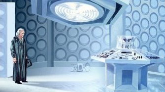
336
(
day 161:
Otherstide Eve - the early evening /
a long time after he was disinherited /
while in is first incarnation according to the Time Lords / possibly 600 years before the Doctor meets his Type 50 again
in Prisoner of Fate / during a time of stagnation on Gallifrey /
1493 GRT/AD /
7 years after Susan's birth from Susan's POV?)
Disguises in Patrexian robes, the Doctor
travels to the repair bay alone and
sneaks into a TARDIS dry dimension dock
on Under-Level 14 of the Citadel
.
He brings only a small bag of items with him. H
e ignores the first seven modern TARDISes and instead he
illegally
steals
the 8th because the key is in the door lock.
This is the same Type 40 he served on as an
Apprentice Time Lord
and used to belong to Castellan Marnal
.
Looking back the Doctor will later realize that if he'd stopped to truly consider his actions, he never would have
left Gallifrey.
Indeed if there hadn't be a TARDIS with a key in the lock he probably would have given up on the endeavor. The
Hand of Omega activates and takes control of the ship.
In order to acquire Susan
(as programmed by the students) the Hand of Omega breaches the back time field buffers and takes the Doctor
into Gallifrey's past so he can rescue her.
336
(
day 162 /
Otherstide / 673 years before Lungbarrow / Quences' age is 7000 +-100 as of his 13th deathday / at least several hours
after the Doctor steals the TARDIS)
When the Prydon Chapter finds out about
the illegal creation of Owis (the Doctor's Replacement) they hold an emergency session (without Quences) and send an
Edict to the House of Lungbarrow giving them five days to protest or the House will be erased from history. The
House is buried by Satthralope because she is angry about Quences's favoritism to the Doctor. She isn't going
to let anyone leave until the Will is read. She thinks this will force Quences to make Glospin Kithriarch.
Glospin kills Quences but Satthralope hides the fact from the house. Owis isn't through brainbuffing at this
point. Redred, a citadel guard from the House of Redlooms, disappears.
Brax is away from Gallifrey
(on a mission for the Time Lords?) and does not attend Quences Death day.
336
(
day 167
/ 5 days after Otherstide)
The House of Lungbarrow is erased from
Gallifreyan History for having exceeded their quota of 45 cousins.
?? (probably after the Doctor's TARDIS is constructed)
The first use of the TARDIS recall circuit
occurs.
336
(shortly after leaving Gallifrey /
Susan is 7 years old)
After a quick detour to
insure Susan's safe birth in the recent past,
the Hand of Omega brings the Doctor back to Gallifrey's past to find
the child
Arkytior
(aka Susan) living on
the streets of ancient Gallifrey.
She recognizes the Doctor as her grandfather and demands to go with him.
After rescuing Susan, the Doctor returns to live on Gallifrey. This is probably because the Hand of Omega
had been programed the the students to bring Susan to them.
The 7 year old Susan is given the name Lady Larn and is adopted by
Councilor Brolin.
She spends at least a few years living in a Gallifreyan House.
Susan spends her whole life moving from one place to another and feels she has never had a real home.
336
(before the Doctor left Gallifrey for good)
After questioning too many instructions
the Type 40 TARDIS (that the Doctor used) is retired forbidden to travel.
The Type 40 TARDIS is decommissioned. Its Decommission Log Number is 2311/6/3.
Decommissioned TARDISes become the property of Capitol and sits
abandoned for the next few decades.
337
(centuries before Mark of the Rani / right after the giant mice experiment /
sometime after the Divided Loyalties flashback /
possibly before the Doctor left Gallifrey /
before Dark Heart /
30 years before Deadly Assassin
/
5 years before the Doctor stole the TARDIS)
Ushas
(the Rani) is exiled from
Gallifrey
by order of the President.
This occurs because she is caught experimenting on intelligent beings. She hijacks the TARDIS delivering her
to her planet of exile and
goes renegade.
The Rani’s TARDIS is more advanced then the Type 40.
By this point she is considered to be one of the finest and most celebrated scientists in Gallifrey's modern
era. The Time Lords don't exert much effort to prevent her meddling. By the time of Mark of the
Rani she will have had several conflicts with the Doctor.
337
(probably after turning 8)
Susan spent time at the Academy (probably
the Prydonian Academy).
Susan takes Spatial Cartography lessons and will end up knowing a lot about temporal physics.
She has
detailed understanding of the physics of Time Travel Capsules.
While she knows how to operate a modern
(Mark III?)
TARDIS,
she has limited understanding of more
antiquated
(Mark I?) Timeships like the Doctor's Type 40.
Due to leaving with the Doctor when in her early teens, she
will never receive a proper Gallifreyan education.
?? The Doctor gives his first, and only, guest lecture to the Prydon Time Academy. It is titled Fly Fishing And Temporal Harmony. During this lecture he discussed the "Poppycock Theory" which states that Humans' short lifespans and high body temperatures are responsible for their excitable natures. The Doctor will later decides he likes humans precisely because the cram some many experiences into such a short lifespan.
?? (Probably before the student revolution becomes active)The Doctor is not allowed to deliver his lecture on "Stuffiness On Gallifrey: The Price of Stability" to the Arcalian Academy.
338 (3 years
before the death of Pundat III)
The students at the academy begin trying to recruit
the Doctor to the cause of their revolution, but he is indecisive.
The Doctor refuses go against Gallifrey's Constitution. He
will keep to this vow at least to his 5th incarnation. But the
students will try (and fail) to recruit the Doctor several more times
after this.
338~
(when Susan is a child)
The Doctor adopts Susan.
Susan spends her whole life moving from one place to another and feels she has never had a real home.
The Doctor and Susan live on the slopes of a mountain in a small white house with a fireplace.
Susan learns to hate the hates the Transtube subway trains on Gallifrey.
As a child Susan sorts everything and everyone into categories of either good or evil.
Susan is one of the only parts of the Doctor's life that can bring a smile to his face.
Susan sits at the Doctor’s feet and tells him all sorts of
stories about his future travels through time and space. She says
he will grow younger with each regeneration and will fight the powers
of darkness. He will destroy monsters, over throw tyrannies, and
kill Vampires. She also claims he will construct the
TARDIS. Despite not approving of fiction and fantasy, the Doctor
enjoys the fanciful tales of his future. She will continue to make
these predictions almost every night for the rest of her time on
Gallifrey.
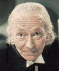
The Doctor's hair turns white.
?? (before Unearthly Child)
By this point the Doctor needs glasses to compensate for his farsightedness.
?? (before Unearthly Child)
By this point the Doctor is old enough to tire easily.
341
(the final days of President Pundat III
/ one year before the Doctor leaves)
The Prydonian Academy Revolution: The
Prydonian Academy students try to overthrow Pundat III by staging protests and marching
outside the Panopticon. The Watch kill several of the students
and riots at the various academies break out.
With much bloodshed, this revolution is ruthlessly put down. The Doctor believes that his entire family
(aside from Susan) is killed
in this revolution. Most other people on Gallifrey believe the same.
By the time of A Big Hand for the Doctor, there will have been a great deal of death in his life.
341 (shortly before the Doctor left /
1 year before the Doctor leaves
/ right after the
first riots)
Pundat III dies of stress
(possibly he was trying to regenerate).
Before his death,
Pundat III
named Chancellor
Slann (aka Pandad VIII
)as his successor.
The
equally corrupt Pandad VIII
(aka Slann) becomes President
Elect
of Gallifrey. The
Prydonian students considered Slann to be the President's most evil disciple.
342?
(after Susan is becoming more mature)
As Susan gets older her trance induced predictions
of the future sound more and more like statements that she has broken the Laws of Time. The Doctor worries what
others who hear her will think. She knows that if the people of Gallifrey discover the truth they would send
Susan back to where he found her. The Doctor suspects that she might be mad, but also wonders if she might have
inherited the Pythian gift of prophecy.
Susan's telepathic abilities are already developing.
Susan doesn’t know what the Hand of Omega is.
Susan never meets Mortimus (the Monk) until the events of To the Death.
342?
(after a long trial / shortly before Azmael guns down the High Council)
Azmael's attempt to convict the High Council
of the genocide of Vitrol Minor does not go well.
Though the use of massive bribery,
the High Council presents false evidence to show that Azmael is in fact the one responsible for the attack on Vitrol
Minor.
Koschei (The Master)
342 Despite his harsh repression, the Prydonian students still believe they can restore Rassilon's Law and make Lady Larn (Susan) President of Gallifrey. Koschei (the Master) plans a second coup. He convinces several students to support him. They will assassinate President -Elect Slann. This probably involved getting Azmael to decide to gun down the High Council in their council chambers. As before, this plot is supported by Cardinal Arkendo (Arkendolirunahain) of the Arcalian Chapter, who hopes to be elected as Susan's Protector if the coup is successful.
342?
(shortly before The Beginning)
The Type 40 TARDIS (that the Doctor will
steal) is
due for the breakers
to be scrapped and vaporized by a quadrigger. By this point all records relating to the previous crew have been
removed.
342~ The Type 40 TARDIS (that chose the Doctor at the Academy), decides to renegade against TARDIS society because of a disagreement she has with her mother. Mother (probably the Matrix) claims to have created the Time Lords so that she would have her own point of creation, but the Doctor’s TARDIS believes that both the creation of Mother (and the subsequent timeships) was simultaneous with the creation of the Time Lords. The TARDIS chooses the Doctor as her pilot because she wanted to see the Universe and he was the only Time Lord mad enough to full-fill her dream. The Doctor doesn’t believe that the Matrix is alive, and sees the stored minds as mere echoes. He considers Gallifrey's reliance on the predictions of the Matrix to be a an unhealthy form of ancestor worship.
342
(Shortly before the Doctor left / after Slann is named Pundat III's successor / when the second coup was being being
prepared)
The
Prydonian students try to recruit the Doctor again
. The Doctor refuses
- perhaps because of how he was manipulated by them to retrieve Susan. This attempt is overheard and reported
to Slann.
342
(after Susan is looking quite mature /
probably before the burn notice on the Doctor was issued / probably shortly before the Doctor leaves Gallifrey)
The Longest Story in the World:
The Doctor visits a market in the Citadel and meets with some of his old friends who are still on the Council.
Susan slips into a trance and begins to talk of how a cybernetic species from another world has already infiltrated
Gallifrey and the High Council.
This could refer to a thematic invasion and point to the bio-technological Matrix actually running Gallifrey
and the Doctors need to escape it. She says they must flee this world soon. When the Doctor tries
to get Susan to stop talking she runs away. The Doctor returns to his house and finds the Watch waiting.
The guards were probably there because of Susan and her origins.
This could be where the Doctor got his memory wiped.
The Doctor is taken before the Inner Council and he reveals the entire plot about using Lady Larn (aka Susan) to replace the President. Parts of the Doctor's memory is selectively wiped so that he doesn't remember the revolution or the part he played in it. The Doctor has no memory of breaking the Laws of Time to rescue Susan from Gallifrey's past.
342?
(almost certainly the same year as the Doctor leaves)
President Pandad VIII issued a Burn Edict
on Braxiatel. Brax kills the Burner who comes to assassinate him. This makes Braxiatel the first person
to ever survive a Burn Edict.
342? (before he left Gallifrey
/ possibly after the students discover that the coup failed because of him)
The Doctor would not keep quiet about his views, and there were powerful people who wanted to stamp out those views.
The Time Lords make a scapegoat out of the Doctor, laying their ‘crimes’ on him. This ostracization
will drive him into the deserts of space and time.
342
(occurred as the Doctor decided to leave /
a year
after the first revolution)
The students learn that the Doctor has betrayed them.
Believing that the surviving Prydonian students were ready for the coup, Koschei begins the revolution.
The air is filled with revolutionary fervor, gunfire, and death.
342??
(at least 400~ years before Deadly Assassin
/ during a revolution / 13 years before Five Doctors
/ a long time before Azmael settles on Jaconda)
Azmael guns down the the High Council
with a laser rifle.
Borusa survives this attack.
342
(right after Slann is killed /
occurred as the Doctor left)
In the resulting chaos, Cardinal Arkendo assumes emergency powers.
Despite the success of the assassinations,
Arkendo
ensures that the coup is ruthlessly crushed by the Citadel Guards.
He overrules the Castellan and catches the unprepared students off-guard.
The reprisals from the death of President
-Elect
Slann take the students by surprise.
Cardinal Arkendo performs
a "witch hunt" to find and punish all students involved in the coup.
It becomes known as a reign of terror.
Prydonian Rozinelastorameth is one of the rebel students, but Lord Deliavastud of the CIA steps in and prevents his
execution.
Arkendo
is viewed as a hero.
342
(on or shortly before
the day the Doctor left)
To punish Braxiatel for killing the Burner, Pandad VIII forces him to the become the new Lord Burner.
Desperate for revenge after seeing the Doctor betray him, Cardinal Arkendo
convinces the President to have the Doctor killed.
Brax's first test was to assassinate the Doctor and
Lady Larn (Susan), but instead he warns the Doctor about the President's wishes.
Irving Braxiatel is still Gallifrey's Ambassador at this point.
342 The Doctor is frustrated with pain, misery and self-doubt of his life on Gallifrey. He is angry at the High Council for its corruption, arrogance, impotence and for refusing to tolerate his own arrogance. He is just as disgusted with the revolutionary fervor, gunfire, and death in the air . He doesn't want either side to have control of the Hand of Omega. The Doctor is also bored with passively observing and gathering knowledge about the outside Universe. He believes his personal truth lies in the stars and decides to leaves Gallifrey to find an ideal society. There is something else that happened to bring him to this decision. Probably being scapegoated for the failure of the coup. Ruath (who is also upset by the revolutionary fervor) and the Doctor decides to leave Gallifrey together in the old TARDIS that used to serve on, which is now retired and due for the breakers. He will later claim that he would have preferred his old Type 50 but that it wasn't available at the time he left. The Doctor plans to take his Granddaughter Susan with him, but doesn't tell her until the last minute. At this point he is willing to maim and kill if it becomes necessary to escape Gallifrey.
342
(shortly before leaving Gallifrey)
The Doctor last sees Ruath
in the Panopticon Library.
342
(
the day the Doctor left)
Instead of following the Burn Edict, Brax
and the Master conspire to kill President
Elect Pandad VIII
(aka
Slann).
The President leaves a recommendation that the Doctor be his successor.
342
(the day the Doctor left)
The Doctor decides to leave
Ruath behind because he didn't think she was up to being a renegade. He believes she should be a political rebel
and keep the High Council in line. He leaves a message for her and skips his appointment with Ruath. Ruath
never finds the message. Quadrigger 3911 (named Stoyn) begins dismantling the engines of the Type 40 TARDIS
before the ships final trip to the vaporizers at the breakers. Stoyn is from a new blood house.

342
(Aeons away from 1963 AD /
60 years before Byzantium / ages after the Doctor was born / when Susan is very young /
Susan must be at least 13 years old / Susan is probably less then 14 years old / while in his first incarnation
according to the Time Lords / possibly 600 years before the Doctor meets his Type 50 again in Prisoner of Fate /
while the reprisals for the assassinations were at their bloodiest)
The Beginning: Brax allows the Doctor (and Larn/Susan) to escape in a stolen TARDIS.
The Doctor and
Larn (Susan) become the second two people to survive a Burn Edict.
Braxiatel will miss the Doctor.
The Doctor tells Susan that they must leave so that neither side of the revolution will gain access to the Hand of Omega.
Susan sees herself as an accidental hanger-on who the Doctor never intended to accompany him. She brings a some
clothes and a few books and didn't realize they were leaving Gallifrey till they entered the TARDIS. Susan thinks
the Hand of Omega is just a metal trunk that the Doctor is bringing.
The Doctor's
ring is a key part in his escape from Gallifrey.
The Watch drives the Doctor and Susan down below the Citadel walkways, and then opens fire on them with stasers
set to kill.
The Doctor
, Susan
and the Hand of Omega
sneak into a TARDIS
dry dimension work dock repair bay
on Under-Level
of the Citadel
.
The Doctor knew the Type 40 TARDIS was there.
In the original timeline he
illegally
steals
a Type 40
because it was unlocked (not realizing that
the Type 40 had deliberately left the door unlocked). After his biodata had been infected by the Great Intelligence,
there were now two unlocked timeships. And the Doctor needed Clara's guidance to pick the Type 40 over the
other TARDIS.
This Type 40 is the same Ship he served on as an
Apprentice Time Lord
and used to belong to Castellan Marnal
.
Unfortunately he steals the TARDIS before the
repairs could be made to the Navigation System, and Main Time-Mechanism and before a Chameleon Conversion could be performed
(despite this the Chameleon Circuit continues to function for some time).
The Doctor and the TARDIS steal each other (though the Doctor thinks of it borrowing and plans to return the
TARDIS some day).
Susan and the Doctor didn't think they would be away from Gallifrey for very long when they left. However
the TARDIS never intends to return the Doctor to Gallifrey.
Even the TARDIS
doesn’t know who the Doctor really is and simply thinks of the Doctor as “My Thief.”
The TARDIS views traveling with the Doctor as a fun game. She sees the possibility of him dying as being
a silly inconvenience but knows that she will become the Doctor’s tomb on Trenzalor. But she also knows
that there was some uncertainty involved in that event.
The 9th Doctor refers to having traveled time and space for 900 years. This might be the point he's referring
too.
Quadrigger Stoyn is still on board the TARDIS when it departs.
Power fails after the TARDIS enters the Vortex but the Hand of Omega helps them materialize on
the Earth's Moon. The Doctor, Susan, and Stoyn witness the Archaeons altering evolution on the Earth as part
of their experiment. But the Archaeons are forced to abandon experiment when Stoyn accidentally freezes them
in time of over 450 million years. The TARDIS uses these millions of years to regenerate its power systems.
342
~
(after the Doctor leaves)
The technicians Andro and Fabian observe the Doctor's theft via an opticon. The CIA monitors the Doctor
TARDIS's departure from Gallifrey and note that he has taken Susan with him.
The Doctor loses his Prydonian membership because of the theft.
The Time Lords might have placed a price on the Doctor's head.
Its quite possible that (because of these crimes) the Doctor is no longer legally a Time Lord.
The Doctor believes that the High Council will have Koschei (the
Master) supervise the Agents sent to capture him and return him for
trial. The sculptor, Lady Galah and Lord Tebediatroculozan will
secretly admire the Doctor when he becomes a renegade. From within the
Matrix, Rassilon will monitor the travels of the Doctor. He will view
the Doctor as something of a favored son, and see the Doctor in his great cause.
The Auld Mortality Alternate Timeline
The Auld Mortality alternated timeline was probably created by Quences when the matricians told him of his own murder. In response, Quences might have made Glospin Kithriarch (instead of telling him he wasn’t going to get to be). So Glospin didn't kill Quences and Quences moved his death day to 13 days after Otherstide, to give him time to create a new plan.-6600? The Doctor's great-granduncle is Kithriarch Quences is born. Quences is obsessed with funeral rites.
??
(probably before Quences died)
President Cholem dies from slipping on the Panopticon steps and splitting his head open.
?? (probably before Quences died)
President Rosieh was poisoned by his own food taster.
Precept II died from a paper-cut at an archivists' supper.
?? Ordinal General Quences regenerates
236? Quences gave Badger to the Doctor as a graduation present. Badger becomes the Doctor's servant.
?? Susan is born. Susan is the daughter of the Doctor's daughter. (It could be that the Doctor's eldest son underwent a sex-change regeneration) Quences is Susan's great great great-granduncle but he doesn’t know or recognize Susan.
?? Susan's mother (the Doctor's daughter) thinks that Doctor was a bad influence on her.
350? (day 175 / 13 days after Otherstide /
year Septuamillengesima:
70,000 days before Easter? or 70,000 years from some event?
/ when Susan is a child)
Quences' final Deathday. Neither the Doctor, nor Susan attend.
Quences mind should have been interned in the Matrix but
wasn't. Instead it is transferred into Badger.
? (when Susan was a child)
Susan didn't disown the Doctor (she had been relatively
recently loomed).
?? Susan meets Badger.
342? (while Susan is still a child and living in the same era as the Doctor / sometime after the
Doc graduates)
The Doctor has his eye on a particular TARDIS - retired and due
for the breakers. He was going to leave Gallifrey and take Susan with him. Quences and Badger influence
the Doctor's mind so he doesn't leave Gallifrey. Instead he starts living in his TARDIS.
The TARDIS is disguised as a marble mausoleum in the cisterns under the capitol.
?? The Dalek invasion of the Earth in the 22nd century was never repelled, and
Magnus' (The War Chief's) armies conquered most of the Galaxy.
900??
(300 years before Auld Mortality)
The Doctor uses an illegal Possibility Generator to write mary-sue
adventures stories. He publishes An Adventurer in Space and Time, which is available through public register
video. The Doctor becomes Gallifrey's most popular living author.
? Susan attends the Academy
?? (they were born after the Doctor became a reclusive)
Susan has two grandchildren (a girl and a boy) of her own
?? (less then 1000 years after Quences' death /
probably after the War would have started)
Gallifrey is even more stagnant now then it was when the Doctor
was at the Academy. Presidents pledge to do their duty until death. There have been 1000 Lord Presidents
(instead of just over 400). Many presidents die before reaching a second term (so less then 150 years).
Most don't survive a single regeneration. Thalak Empire controls half of Mutter's Spiral.
1200??
Susan puts herself up for candidacy for the position of Lord President of Gallifrey. She plans to revitalize
and restructure Gallifrey.
1200??
(day 128)
Intuitive Revolution Day.
1200??
(the day before Otherstide/Othersmass /
centuries after the Doctor could have become President / if Doctor was a century younger he would have considered
leaving Gallifrey
)
Auld Mortality: Susan comes to visit the Doctor.
1200??
(Otherstide/Othersmass / 34 days after Intuitive Revolution Night / year Septuamillengesima:
70,000 days before Easter? or 70,000 years from some event?)
Auld Mortality: Susan is inaugurated as Lord the
President of Gallifrey. The Doctor leaves Gallifrey without Susan, who stayed to become the next President
of Gallifrey. The Doctor creates an alternate Susan using his Possibility Generator.
1200?? The Innocents: The Doctor takes Leonardo da Vinci to see the first Christmas.
1200??
(sometime after Auld Mortality)
Storm of Angels: After the Doctor changes history several
times President Susan sends Temporal Agent Zeuro of the Central Office of Temporal Observation to arrest him.
The Doctor's possibility generator beings to break which begins killing the alternate Susan it created. Zeuro
is possessed by an alien intelligence. President Susan uses her Time Ring to travel to the Earth and confront
the Doctor. After seeing the wonders of the universe President Susan sends the alternate Susan back to Gallifrey
in her place and begins traveling with the Doctor.